<!doctype html>
<html lang="en">
<head>
  <meta charset="utf-8">
  <meta name="viewport" content="width=device-width, initial-scale=1">
  <title>arxiv digest — 2026-10-15</title>
  <style>
:root {
  --bg: #ffffff;
  --fg: #1f2328;
  --muted: #59636e;
  --border: #d0d7de;
  --card: #f6f8fa;
  --link: #0969da;
}
body {
  max-width: 980px;
  margin: 0 auto;
  padding: 2rem 1rem 5rem;
  font-family: -apple-system, BlinkMacSystemFont, "Segoe UI", Helvetica, Arial, sans-serif;
  line-height: 1.55;
  color: var(--fg);
  background: var(--bg);
}
a { color: var(--link); }
img { max-width: 100%; height: auto; }
pre, code { background: var(--card); border-radius: 6px; }
pre { padding: 1rem; overflow-x: auto; }
blockquote { border-left: 4px solid var(--border); padding-left: 1rem; color: var(--muted); }
details { margin: 0.6rem 0; }
summary { cursor: pointer; font-weight: 600; }
.paper-figures-scroll {
  display: flex;
  gap: 1rem;
  overflow-x: auto;
  overscroll-behavior-x: contain;
  padding: 0.75rem 0.25rem 1rem;
  margin: 1rem 0 1.25rem;
  border-top: 1px solid var(--border);
  border-bottom: 1px solid var(--border);
  scroll-snap-type: x proximity;
}
.paper-figure-card {
  flex: 0 0 min(260px, 72vw);
  scroll-snap-align: start;
  background: var(--card);
  border: 1px solid var(--border);
  border-radius: 12px;
  padding: 0.55rem;
}
.paper-figure-card img {
  display: block;
  width: 100%;
  max-height: 240px;
  object-fit: contain;
  background: white;
  border-radius: 8px;
}
.paper-figure-caption {
  display: block;
  margin-top: 0.5rem;
  color: var(--muted);
  font-size: 0.85rem;
}
.figure-strip-hint {
  color: var(--muted);
  font-size: 0.9rem;
  margin-bottom: -0.3rem;
}
</style>
  <script>
    window.MathJax = {
      tex: {
        inlineMath: [['$', '$'], ['\\(', '\\)']],
        displayMath: [['$$', '$$'], ['\\[', '\\]']],
        processEscapes: true,
        processEnvironments: true
      },
      options: {
        skipHtmlTags: ['script', 'noscript', 'style', 'textarea', 'pre', 'code'],
        ignoreHtmlClass: 'tex2jax_ignore',
        processHtmlClass: 'tex2jax_process'
      }
    };
  </script>
  <script id="MathJax-script" async
    src="https://cdn.jsdelivr.net/npm/mathjax@3/es5/tex-chtml.js"></script>
</head>
<body>
<header style="background-color: #333; color: white; padding: 15px; margin-bottom: 20px;">
  <h1 style="margin: 0; font-size: 24px;">
    <a href="https://ochelpan.github.io/arXiv_clean/" style="color: white; text-decoration: none;">Main</a>
  </h1>
</header>

<h1>Daily arXiv Report</h1>

<hr>
<p>
<a href="index.html">← Index</a>
 · <a href="papers_05.html">← Previous</a> · <a href="papers_07.html">Next →</a>
</p>
<hr>

<h2>Papers 101–120</h2>
<p><a id="paper-2610.18029"></a></p>
<h3 id="lossless-reductions-and-hybrid-sampling-for-phylogeny-using-the-maximum-compatibility-criterion"><a href="http://arxiv.org/abs/2610.18029v1">Lossless Reductions and Hybrid Sampling for Phylogeny Using the Maximum Compatibility Criterion</a></h3>
<p><strong>Authors:</strong> Orson Ye, James Bonfield, Joshua Cudby, Richard Durbin, Sergii Strelchuk<br>
<strong>Type:</strong> theory · <strong>Category:</strong> other · <strong>PDF:</strong> <a href="https://arxiv.org/pdf/2610.18029v1">https://arxiv.org/pdf/2610.18029v1</a><br>
<strong>Analysis basis:</strong> full PDF text, analyzed in chunks</p>
<div class="figure-strip-hint">↔ Scroll figures horizontally</div>
<div class="paper-figures-scroll">
<figure class="paper-figure-card">

<figcaption class="paper-figure-caption"><b>Fig 1.</b> Figure 1: Benchmarks of exact maximum clique solvers, IncMaxCLQ and CliSAT. The results derived from graphs taken from random subsets of size 100 to 20,000 sequences in increments of 50. Times are the total execution time.</figcaption>
</figure>
<figure class="paper-figure-card">
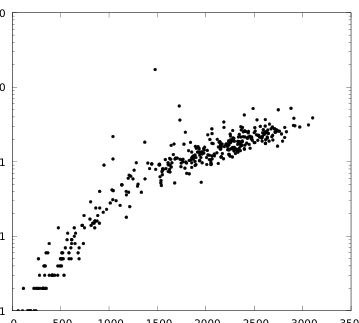
<figcaption class="paper-figure-caption"><b>Fig 2.</b> Figure 1 shows the time taken as a function of the number of nodes in the graph. Both CliSAT and IncMaxCLQ show a polynomial base-line for CPU growth, which can cover the bulk of the execution runs. However there are outliers which are expected to follow an exponential CPU growth. The tools can be ran with a fixed time limit, returning the best result found within that time.</figcaption>
</figure>
<figure class="paper-figure-card">
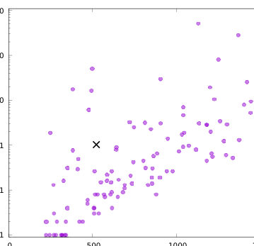
<figcaption class="paper-figure-caption"><b>Fig 3.</b> Figure 2: Benchmarks of the approximate solver SCCWalk4L. This returns a single clique after a time limit of 1000s. Colours represent the quality of result, showing perfect maximum cliques, imperfect cliques found with at least 99% of the maximum clique size, and cliques found below 99%. Times shown are the time to find the best solution, which is typically considerably less than the fixed specified execution time.</figcaption>
</figure>
<figure class="paper-figure-card">
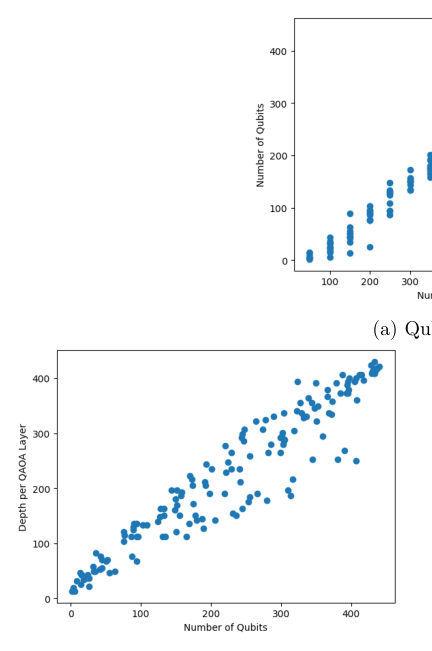
<figcaption class="paper-figure-caption"><b>Fig 4.</b> Figure 3: Scatter plots of the depth and gate count against number of qubits of the QAOA circuits required to solve the MWC problem on various subsets of SARS-CoV-2 genome samples.</figcaption>
</figure>
<figure class="paper-figure-card">
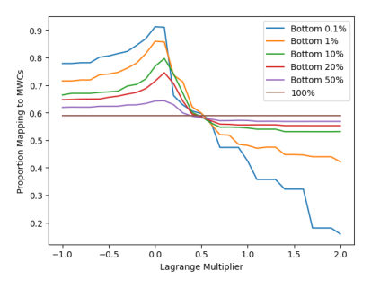
<figcaption class="paper-figure-caption"><b>Fig 5.</b> Figure 4: For different Lagrange multipliers, the low energy solutions correspond to different subgraphs. Taking different fractions of the lowest energies, we show what proportions of the corresponding subgraphs correspond to MWCs given our postprocessing algorithm.</figcaption>
</figure>
</div>
<p><strong>Summary.</strong> This paper enhances phylogenetic reconstruction by tackling the difficult problem of enumerating all maximum compatible character sets. It combines graph reduction techniques with quantum sampling methods and benchmarks these against advanced classical solvers. The goal is to efficiently solve the underlying maximum weight clique problem derived from sequence compatibility data.</p>
<p><strong>Why it may be interesting.</strong> While the core problem is combinatorial biology, the explicit formulation of the MWC problem as a QUBO/MWIS problem and the application of QAOA instances make it relevant to quantum algorithm development for hard optimization problems.</p>
<details>
<summary>Detailed structure</summary>
<p><strong>Main problem.</strong> The paper addresses the computationally hard problem of enumerating all maximum weight cliques (MWC) derived from the Maximum Compatibility Criterion used in phylogenetic reconstruction.</p>
<p><strong>Main result.</strong> The authors propose a hybrid approach combining graph reduction techniques with quantum sampling and advanced classical solvers to tackle the enumeration bottleneck, showing improvements over existing methods.</p>
<p><strong>Method.</strong> The methodology involves formulating the problem as a maximum weight independent set enumeration, applying lossless graph reductions, and testing bespoke Quantum Approximate Optimisation Algorithm (QAOA) instances alongside classical solvers like AClique and SCCWalk4L.</p>
<p><strong>Model / system.</strong> The model is phylogenetic reconstruction based on Multiple Sequence Alignments (MSAs), where compatibility data forms a weighted graph whose MWC corresponds to the optimal set of characters retained.</p>
<p><strong>Key observables.</strong> The primary observables are the size and weight of the maximum compatible character set (MWC), and the computational time required to enumerate the entire set of optimal solutions.</p>
<p><strong>Important parameters / regimes.</strong> Graph size (number of vertices/characters), weights assigned to characters, and the number of samples/iterations used in quantum algorithms.</p>
<p><strong>Assumptions / limitations.</strong> The work assumes that graph reduction and quantum sampling can be effectively combined to maintain exact reconstruction, although the quantum results are not claimed as a definitive quantum advantage.</p>
<p><strong>Figures summary.</strong> Figures benchmark various classical solvers (FastWCLQ2, SCCWalk4L, AClique) showing the trade-off between computational time and the quality (size) of the found maximum clique for graphs of increasing size.</p>
<p><strong>Paper structure.</strong> The paper builds upon existing work (Cherry's algorithm), first detailing the formulation as an MWC enumeration problem, then introducing graph reduction techniques, and finally exploring hybrid solvers combining these reductions with quantum sampling and benchmarking against state-of-the-art classical solvers.</p>
</details>
<details>
<summary>Abstract</summary>
<p>Maximum compatibility provides a criterion for phylogenetic reconstruction in which the objective is to retain a maximum set of mutually compatible characters. For binary characters, pairwise compatibility can be represented by a weighted graph whose vertices correspond to characters and whose edges connect compatible pairs. A leading algorithm by Cherry [BMC Bioinformatics, 18(1):127, 2017] uses this representation to identify maximum compatible character sets as maximum weight cliques.   We formulate the problem as maximum weight independent set enumeration on the complement graph and use deterministic postprocessing to map sampled bit strings to maximal feasible solutions. To explore the prospects of quantum computational advantage, we further construct bespoke correction-in-the-loop Quantum Approximate Optimisation Algorithm instances and find that traditional Lagrange multiplier choices may not be optimal for the enumeration problem on noisy devices.   We also introduce lossless graph reductions with reconstruction rules that preserve the complete set of optimal solutions. Our results indicate that graph reduction and sampling can be effectively combined to address the enumeration bottleneck in maximum compatibility phylogeny, while retaining exact reconstruction when the residual optimum set is completely resolved.   We enhance Cherry's approach to maximum compatibility by introducing graph reduction techniques and quantum sampling. Our classical benchmarks show a clear difference between finding one optimum and recovering the optimum set in practice. We demonstrate the utility of our methods on graphs constructed from SARS-CoV-2 sequences.</p>
</details>
<p><sub><a href="#top">↑ back to top</a></sub></p>

<p><a id="paper-2610.18218"></a></p>
<h3 id="methods-for-automated-equivalence-checking-of-quantum-error-correction-codes"><a href="http://arxiv.org/abs/2610.18218v1">Methods for Automated Equivalence Checking of Quantum Error-Correction Codes</a></h3>
<p><strong>Authors:</strong> Maxie Bichmann, Ludwig Schmid, Robert Wille<br>
<strong>Type:</strong> theory · <strong>Category:</strong> quantum information and computing · <strong>PDF:</strong> <a href="https://arxiv.org/pdf/2610.18218v1">https://arxiv.org/pdf/2610.18218v1</a><br>
<strong>Analysis basis:</strong> full PDF text, analyzed in chunks</p>
<div class="figure-strip-hint">↔ Scroll figures horizontally</div>
<div class="paper-figures-scroll">
<figure class="paper-figure-card">

<figcaption class="paper-figure-caption"><b>Fig 1.</b> Figure 1: Three realizations of the Steane code: the original construction (center) and variants with rela- beled qubits (left) or additional local Cliffords (right).</figcaption>
</figure>
<figure class="paper-figure-card">

<figcaption class="paper-figure-caption"><b>Fig 2.</b> Figure 2: Representation freedom (light gray) relates encodings of the same code; physical freedom (dark gray) relates equivalent codes. A checker must recog- nize their combined equivalence relation (red).</figcaption>
</figure>
<figure class="paper-figure-card">
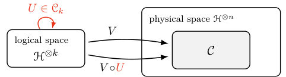
<figcaption class="paper-figure-caption"><b>Fig 3.</b> Figure 4: Encoding map V : H⊗k →H⊗n and its precomposition with a logical Clifford U have the same image C, but yield different logical frameworks.</figcaption>
</figure>
<figure class="paper-figure-card">

<figcaption class="paper-figure-caption"><b>Fig 4.</b> Figure 6: Traversal of the physical transformation space (dashed branches superfluous, skipped), resolving the representation freedom at each visited transforma- tion.</figcaption>
</figure>
<figure class="paper-figure-card">

<figcaption class="paper-figure-caption"><b>Fig 5.</b> Figure 7: Local complementation at node 0: com- plementing the subgraph induced by its neighborhood (light lilac).</figcaption>
</figure>
</div>
<p><strong>Summary.</strong> This paper addresses the challenge of automatically checking if two quantum error-correcting codes are equivalent, accounting for multiple sources of ambiguity. The authors develop and benchmark a hybrid computational framework that combines several advanced techniques to solve this problem efficiently. The work provides a crucial tool for the field by offering scalable, systematic methods for code comparison.</p>
<p><strong>Why it may be interesting.</strong> While focused on QEC, the rigorous development of automated algebraic and computational tools for determining structural equivalence is highly relevant to characterizing complex quantum states and codes used in quantum simulation.</p>
<details>
<summary>Detailed structure</summary>
<p><strong>Main problem.</strong> The paper develops automated methods to determine if two descriptions of Quantum Error-Correction (QEC) codes are equivalent under various transformations.</p>
<p><strong>Main result.</strong> No single algorithmic paradigm works universally, necessitating a hybrid checker combining group-action search, isomorphism methods, and constraint solving for optimal performance.</p>
<p><strong>Method.</strong> The authors formalize equivalence notions (like permutation and local-Clifford) and combine three distinct algorithmic strategies into a staged Refute-Refine-Decide architecture.</p>
<p><strong>Model / system.</strong> The focus is on Quantum Error-Correction Codes (QECCs), specifically stabilizer codes and CSS codes, which are defined by their generator matrices and associated Pauli group structures.</p>
<p><strong>Key observables.</strong> Mean runtimes for equivalence checking, the fraction of distinguished qubit pairs ($ar{q}$), and the number of SAT solver decisions.</p>
<p><strong>Important parameters / regimes.</strong> Physical qubit number ($n$), number of stabilizers ($r$), and the specific equivalence notion (permutation vs. local-Clifford).</p>
<p><strong>Assumptions / limitations.</strong> The work assumes that the core challenge lies in automating the comparison across different representations and physical freedoms inherent in code descriptions.</p>
<p><strong>Figures summary.</strong> Figures illustrate the ambiguity of code representations (e.g., Steane code realizations) and compare the runtime and memory scaling of various encoding techniques (Full-Group vs. Matroid-Circuit) for equivalence checking.</p>
<p><strong>Paper structure.</strong> The paper systematically defines the problem by separating physical freedom from representation freedom, develops multiple algorithmic tools (group action, isomorphism, constraint solving), and empirically evaluates their combined performance.</p>
</details>
<details>
<summary>Abstract</summary>
<p>Quantum error-correction code and circuit construction is an active field of research, motivating automated methods for identifying equivalent designs. We develop and evaluate automated strategies for deciding whether two descriptions of quantum error-correction codes are equivalent under specified transformations. We formalize permutation equivalence for stabilizer and CSS codes and local-Clifford equivalence for stabilizer codes within a unified framework that separates physical from representation freedom. We develop three decision strategies (group-action search, isomorphism-based methods, and constraint solving), together with invariants and signatures for preprocessing. The empirical evaluation shows that no paradigm dominates across equivalence notions, code families, and parameter ranges. We therefore combine their complementary strengths in input-dependent hybrid checkers following a staged Refute-Refine-Decide architecture. Mean hybrid runtimes remain below 10 s for most evaluated structured-code cases with $n \leq 37$; for inequivalent code instances with $n=144$, they are about 310 s for permutation and 16 s for local-Clifford equivalence.</p>
</details>
<p><sub><a href="#top">↑ back to top</a></sub></p>

<p><a id="paper-2610.17454"></a></p>
<h3 id="norm-properties-of-quantum-uniformity-measures"><a href="http://arxiv.org/abs/2610.17454v1">Norm properties of quantum uniformity measures</a></h3>
<p><strong>Authors:</strong> Berke Ünal<br>
<strong>Type:</strong> theory · <strong>Category:</strong> quantum information and computing · <strong>PDF:</strong> <a href="https://arxiv.org/pdf/2610.17454v1">https://arxiv.org/pdf/2610.17454v1</a><br>
<strong>Analysis basis:</strong> full PDF text, analyzed in chunks</p>
<div class="figure-strip-hint">↔ Scroll figures horizontally</div>
<div class="paper-figures-scroll">
<figure class="paper-figure-card">

<figcaption class="paper-figure-caption"><b>Fig 1.</b> Low-resolution page preview, page 2</figcaption>
</figure>
<figure class="paper-figure-card">

<figcaption class="paper-figure-caption"><b>Fig 2.</b> Low-resolution page preview, page 3</figcaption>
</figure>
<figure class="paper-figure-card">
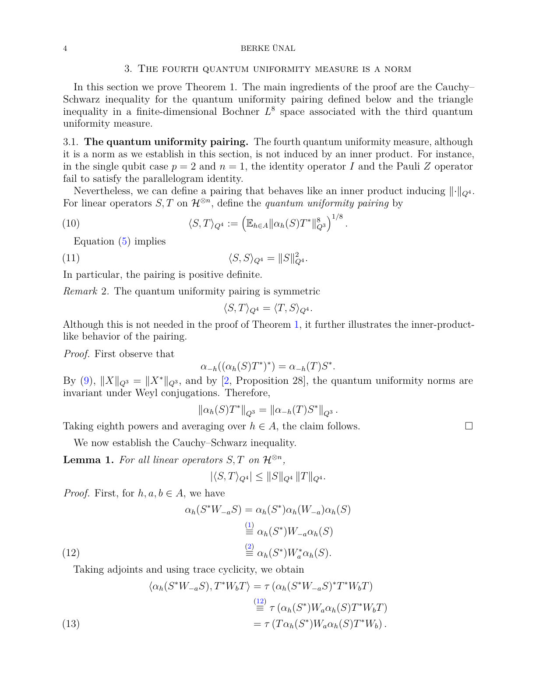
<figcaption class="paper-figure-caption"><b>Fig 3.</b> Low-resolution page preview, page 4</figcaption>
</figure>
<figure class="paper-figure-card">

<figcaption class="paper-figure-caption"><b>Fig 4.</b> Low-resolution page preview, page 5</figcaption>
</figure>
<figure class="paper-figure-card">
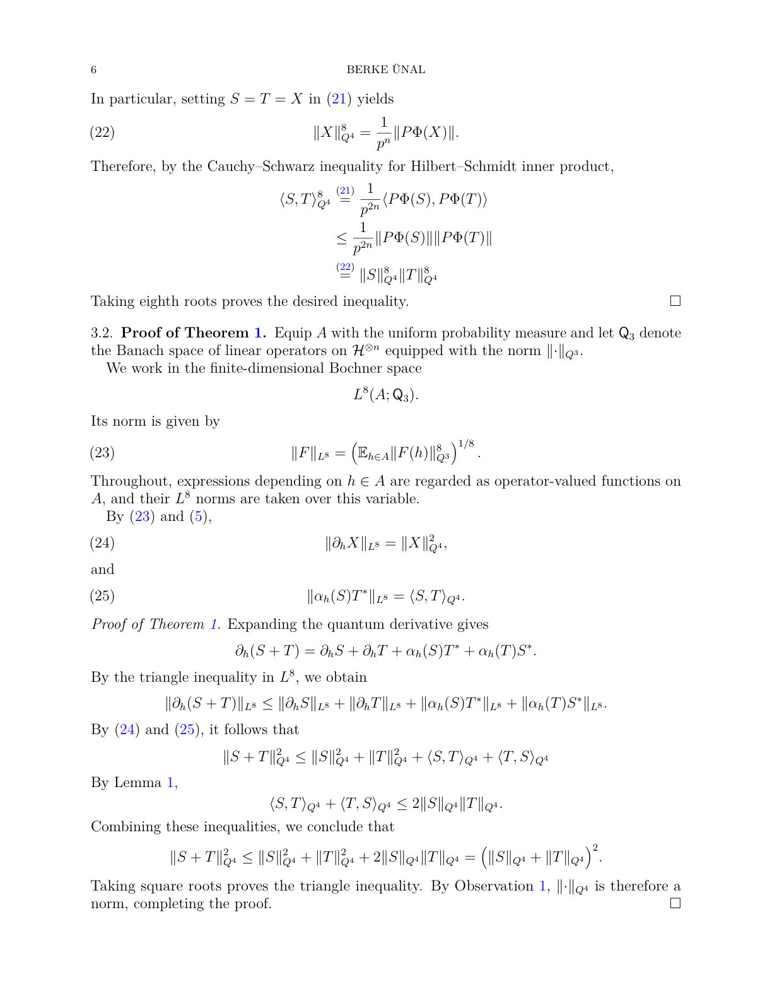
<figcaption class="paper-figure-caption"><b>Fig 5.</b> Low-resolution page preview, page 6</figcaption>
</figure>
</div>
<p><strong>Summary.</strong> This paper rigorously determines the conditions under which quantum uniformity measures act as true norms. It proves that these measures are only norms for $k=2, 3,$ and $4$, while demonstrating that the triangle inequality fails for all $k \ge 5$. This result provides a complete mathematical answer to an open question concerning the structure of quantum correlations.</p>
<p><strong>Why it may be interesting.</strong> The failure of fundamental mathematical properties like the triangle inequality for higher-order quantum measures suggests deep structural limitations in how these measures capture quantum correlations, which is crucial for understanding resource theories in quantum information.</p>
<details>
<summary>Detailed structure</summary>
<p><strong>Main problem.</strong> The paper investigates the mathematical properties, specifically the triangle inequality, of quantum uniformity measures ($\lVert \cdot 
Vert_{Qk}$).</p>
<p><strong>Main result.</strong> The quantum uniformity measure $\lVert \cdot 
Vert_{Qk}$ is proven to be a norm only for $k=2, 3, 4$; for all $k \ge 5$, the triangle inequality fails.</p>
<p><strong>Method.</strong> The proof for $k=4$ uses the Cauchy–Schwarz inequality on a defined quantum pairing, while the failure for $k \ge 5$ is shown by constructing contradictions using linear systems over finite fields.</p>
<p><strong>Model / system.</strong> The context involves linear operators $T$ acting on the tensor product Hilbert space $H^{\otimes n}$, where $H = \mathbb{C}^p$ ($p$ prime). The measures are related to the Clifford hierarchy, relevant for fault-tolerant quantum computation.</p>
<p><strong>Key observables.</strong> Quantum uniformity measures ($\lVert \cdot 
Vert_{Qk}$), quantum uniformity pairing ($\langle \cdot, \cdot 
angle_{Q4}$), and Weyl moments ($m_r(\psi)$).</p>
<p><strong>Important parameters / regimes.</strong> The integer $k$, which dictates the specific uniformity measure being analyzed; the local dimension $p$ (a prime).</p>
<p><strong>Assumptions / limitations.</strong> The analysis relies on relating the quantum norm to norms derived from associated linear systems, particularly the failure of $L(k)$ to be a norming system for $k \ge 5$.</p>
<p><strong>Paper structure.</strong> The paper first establishes the necessary mathematical tools, proving $\lVert \cdot 
Vert_{Q4}$ is a norm using Cauchy-Schwarz. It then proves the failure of the triangle inequality for $k \ge 5$ by constructing counterexamples using finite field linear algebra, providing a complete answer to an open problem.</p>
</details>
<details>
<summary>Abstract</summary>
<p>We prove that for $k=4$ the quantum uniformity measures are norms, whereas for every $k\geq5$ the triangle inequality fails. This gives a complete answer to an open question of Bu, Gu, and Jaffe. The $k=4$ case is proved using the Cauchy--Schwarz inequality for the quantum uniformity pairing $\langle\cdot,\cdot\rangle_{Q^4}$ introduced here, together with the triangle inequality in a suitable finite-dimensional Bochner $L^8$ space. For $k\geq5$, we construct systems of linear equations over a finite field and derive a contradiction from the structure theory of norming linear systems.</p>
</details>
<p><sub><a href="#top">↑ back to top</a></sub></p>

<p><a id="paper-2610.18816"></a></p>
<h3 id="on-the-coincidence-of-discrete-and-continuous-definitions-of-entanglement-of-formation"><a href="http://arxiv.org/abs/2610.18816v1">On the coincidence of discrete and continuous definitions of Entanglement of Formation</a></h3>
<p><strong>Authors:</strong> Haobo Ma, Maksim E. Shirokov, Wenlin Zhang<br>
<strong>Type:</strong> theory · <strong>Category:</strong> quantum information and computing · <strong>PDF:</strong> <a href="https://arxiv.org/pdf/2610.18816v1">https://arxiv.org/pdf/2610.18816v1</a><br>
<strong>Analysis basis:</strong> full PDF text, analyzed in chunks</p>
<div class="figure-strip-hint">↔ Scroll figures horizontally</div>
<div class="paper-figures-scroll">
<figure class="paper-figure-card">
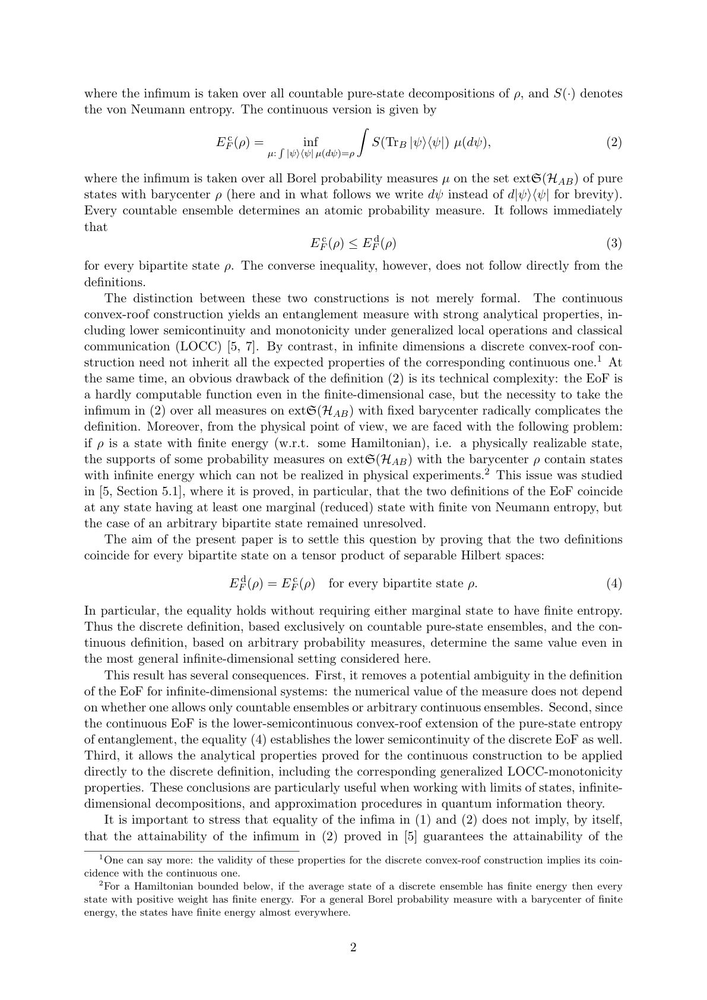
<figcaption class="paper-figure-caption"><b>Fig 1.</b> Low-resolution page preview, page 2</figcaption>
</figure>
<figure class="paper-figure-card">
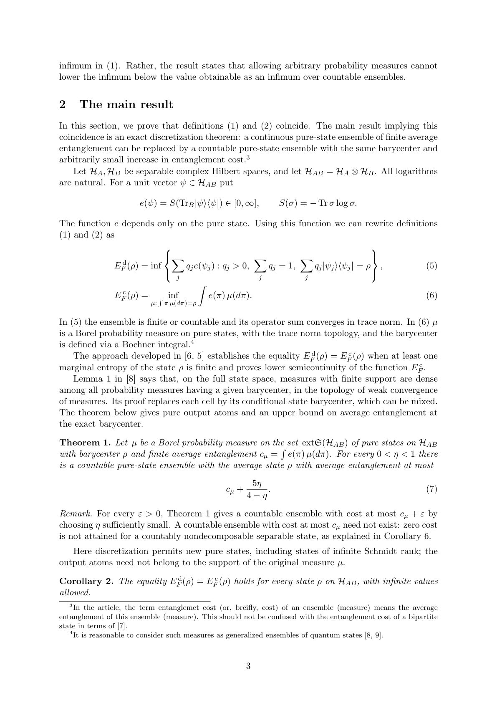
<figcaption class="paper-figure-caption"><b>Fig 2.</b> Low-resolution page preview, page 3</figcaption>
</figure>
<figure class="paper-figure-card">
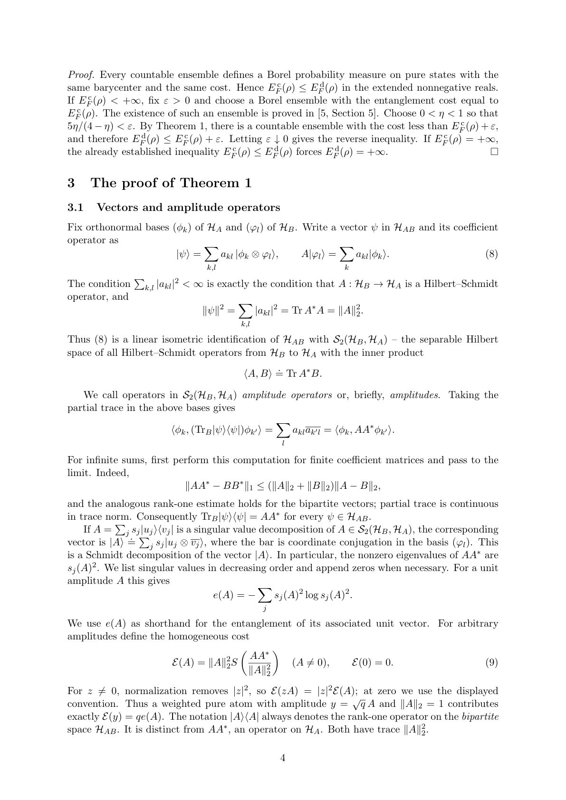
<figcaption class="paper-figure-caption"><b>Fig 3.</b> Low-resolution page preview, page 4</figcaption>
</figure>
<figure class="paper-figure-card">

<figcaption class="paper-figure-caption"><b>Fig 4.</b> Low-resolution page preview, page 5</figcaption>
</figure>
<figure class="paper-figure-card">

<figcaption class="paper-figure-caption"><b>Fig 5.</b> Low-resolution page preview, page 6</figcaption>
</figure>
</div>
<p><strong>Summary.</strong> This paper proves that the discrete and continuous definitions of the Entanglement of Formation coincide for infinite-dimensional bipartite quantum systems. The authors achieve this by developing a powerful discretization theorem that allows any continuous ensemble to be approximated arbitrarily closely by a countable ensemble. This result unifies the mathematical treatment of entanglement measures in complex quantum settings.</p>
<p><strong>Why it may be interesting.</strong> This work provides rigorous mathematical grounding for entanglement measures in infinite dimensions, which is crucial for developing robust quantum information protocols that rely on these quantities.</p>
<details>
<summary>Detailed structure</summary>
<p><strong>Main problem.</strong> The paper aims to prove the mathematical coincidence between two definitions of the Entanglement of Formation (EoF) for infinite-dimensional bipartite quantum systems: the discrete version (based on countable decompositions) and the continuous version (based on Borel probability measures).</p>
<p><strong>Main result.</strong> The core result is the equality $E_d^F(
ho) = E_c^F(
ho)$ for all bipartite states $
ho$, establishing that the continuous definition does not yield a lower bound below that achievable by countable ensembles.</p>
<p><strong>Method.</strong> The proof employs an 'exact discretization theorem' by mapping the continuous ensemble to a Borel measure on Hilbert-Schmidt operators, which is then recursively partitioned and approximated by a countable ensemble.</p>
<p><strong>Model / system.</strong> The system involves bipartite quantum states $
ho$ on separable Hilbert spaces $H_A \otimes H_B$. The analysis is formalized using the representation of pure states via Hilbert-Schmidt operators $A \in \mathcal{S}_2(H_B, H_A)$.</p>
<p><strong>Key observables.</strong> Entanglement of Formation ($E^F$), Entanglement Entropy ($S(\cdot)$), and the associated cost functional $J(A)$.</p>
<p><strong>Important parameters / regimes.</strong> The proof involves taking a limit $\eta 	o 0$ and relies on contraction factors $\alpha = \eta/4$ and $\eta/2$ during the recursive decomposition.</p>
<p><strong>Assumptions / limitations.</strong> The proof assumes the existence of a Borel section for lifting the measure $\mu$ to a probability measure $\mu_0$, and it requires the cost functional $J$ to be convex and lower semicontinuous.</p>
<p><strong>Paper structure.</strong> The paper develops the proof by first establishing the necessary discretization theorem (Theorem 1), then formalizing the continuous ensemble as a Borel measure on amplitudes, and finally applying a recursive decomposition process (Lemma 5) to show that the total cost converges to the discrete definition's value.</p>
</details>
<details>
<summary>Abstract</summary>
<p>It is proved that every Borel ensemble of pure states on a separable bipartite Hilbert space with finite average entanglement admits a countable ensemble with the same barycenter and arbitrarily small additional average entanglement. Consequently, the discrete and continuous versions of the Entanglement of Formation coincide on the whole space of states of infinite-dimensional bipartite quantum system (with infinite values allowed).   The main idea of the proof (realized with the AI-assistance) is the identification of a Borel ensemble of pure bipartite states with a Borel probability measure on the unit sphere of the space of Hilbert--Schmidt operators followed by dividing the support of this measure into appropriate cells and replacing each cell by its conditional barycenter. The resulting countable ensemble is obtained by a recursive construction.</p>
</details>
<p><sub><a href="#top">↑ back to top</a></sub></p>

<p><a id="paper-2610.18128"></a></p>
<h3 id="organisation-and-aggregation-of-calcium-carbonate-ions-in-water-via-molecular-simulation"><a href="http://arxiv.org/abs/2610.18128v1">Organisation and aggregation of calcium carbonate ions in water via molecular simulation</a></h3>
<p><strong>Authors:</strong> Elizaveta Sidler, Rita S Dias, Raffaela Cabriolu<br>
<strong>Type:</strong> theory · <strong>Category:</strong> statistical mechanics · <strong>PDF:</strong> <a href="https://arxiv.org/pdf/2610.18128v1">https://arxiv.org/pdf/2610.18128v1</a><br>
<strong>Analysis basis:</strong> full PDF text, analyzed in chunks</p>
<div class="figure-strip-hint">↔ Scroll figures horizontally</div>
<div class="paper-figures-scroll">
<figure class="paper-figure-card">
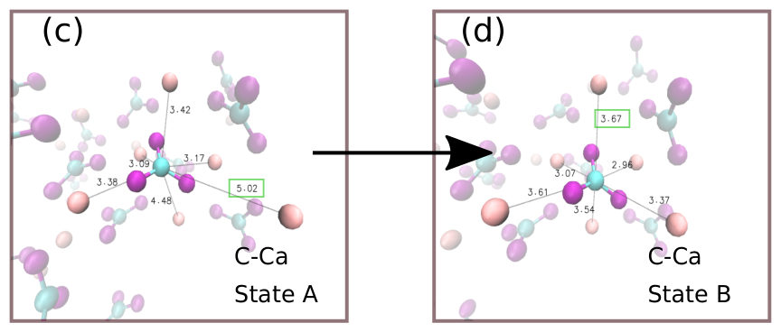
<figcaption class="paper-figure-caption"><b>Fig 1.</b> Figure 1: Simulation snapshots of the system with χion/w = 0.01 and Nion = 72 when (a) d Ca−C 6,min ≥λA (≈4.90 Å), (b) d Ca−C 6,min ≤λB (≈3.66 Å), (c) d C−Ca 6,min ≥λA (≈5.02 Å), (d) d C−Ca 6,min ≤λB (≈3.67 Å). Only calcium and carbonate ions are shown; water is omitted. Ions outside the corresponding coordination sphere are semitransparent. The distances between the central atom (Ca or C) and its 6 nearest neighbours (C or Ca) are indicated, with the corresponding 6th minimum distance enclosed in the green frame. Calcium atoms are shown in light pink, carbon atoms are in turquoise, and oxygen atoms are in magenta.</figcaption>
</figure>
<figure class="paper-figure-card">
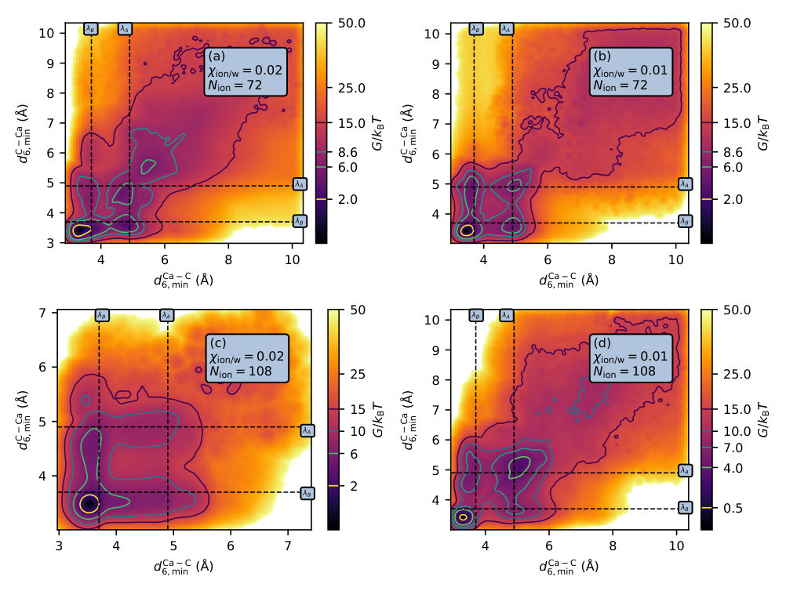
<figcaption class="paper-figure-caption"><b>Fig 2.</b> Figure 2: FESs projected onto the d Ca−C 6,min and d C−Ca 6,min for the systems with compositions indicated in the legends. LFERs are outlined by the free energy contour lines.</figcaption>
</figure>
<figure class="paper-figure-card">
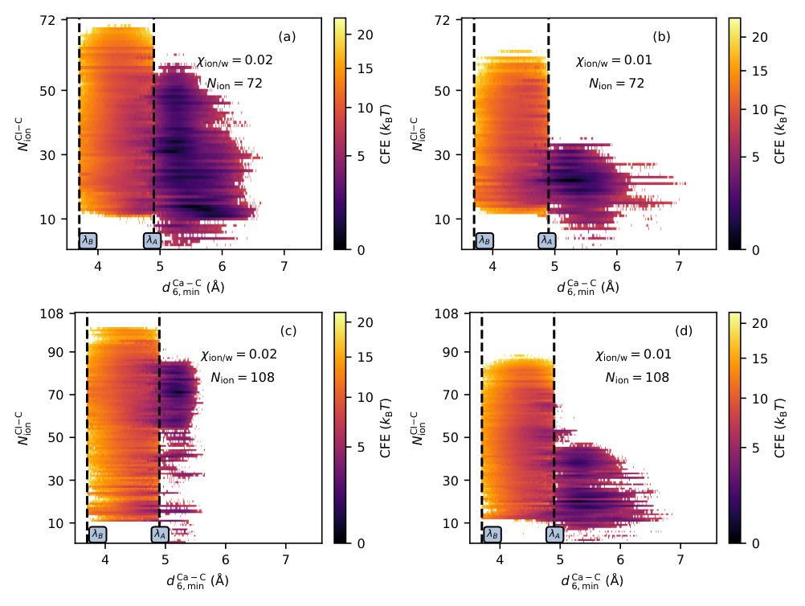
<figcaption class="paper-figure-caption"><b>Fig 3.</b> Figure 3: CFE surfaces as a function of the N CI−C ion and d Ca−C 6,min for the systems with compositions indicated in the legends.</figcaption>
</figure>
<figure class="paper-figure-card">
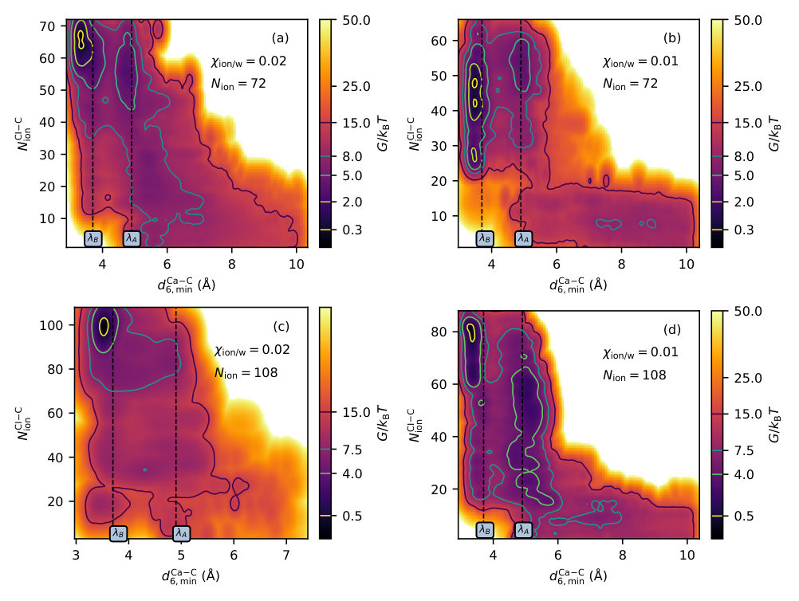
<figcaption class="paper-figure-caption"><b>Fig 4.</b> Figure 4: FESs projected onto d Ca−C 6,min and the corresponding N CI−C ion for the systems with compositions indicated in the legends.</figcaption>
</figure>
<figure class="paper-figure-card">

<figcaption class="paper-figure-caption"><b>Fig 5.</b> Figure 5: (a) Ca–C RDFs in states A and B, as indicated in the legend; (b) CNCI−C Ca−C/C−Ca histograms in states A and B, as indicated in the legend, including contributions from both Ca–C and C–Ca coordinations within the CI-cluster. All plots characterise the CI-cluster associated with d Ca−C 6,min OP in the system with χion/w = 0.01 and Nion = 108.</figcaption>
</figure>
</div>
<p><strong>Summary.</strong> This work uses advanced molecular simulations (OPES and infinityRETIS) to study how calcium carbonate crystallizes in water. The research distinguishes between simple ionic aggregation and the formation of local structural order (the first coordination sphere). It finds that the crystallization pathway is complex, depending on the solution's supersaturation, and involves two distinct mechanisms for forming the initial ordered units.</p>
<p><strong>Why it may be interesting.</strong> While focused on classical crystallization, the use of advanced sampling techniques like RETIS and the detailed mapping of free-energy barriers to distinguish between local order and bulk aggregation provides a sophisticated framework applicable to understanding phase transitions in complex, multi-component systems.</p>
<details>
<summary>Detailed structure</summary>
<p><strong>Main problem.</strong> The study investigates the complex relationship between the initial formation of the first coordination sphere of calcium carbonate (CaCO3) and the overall process of ionic aggregation during crystallization in aqueous solutions.</p>
<p><strong>Main result.</strong> The kinetics of forming the first coordination sphere are highly dependent on the supersaturation level, revealing two distinct formation pathways (near minimum size vs. within large amorphous aggregates).</p>
<p><strong>Method.</strong> The research employs advanced molecular simulation techniques, specifically On-the-fly probability-enhanced sampling (OPES) for free-energy landscapes and asynchronous/infinite-swap replica exchange transition interface sampling (infinityRETIS) for reaction kinetics.</p>
<p><strong>Model / system.</strong> The system modeled is aqueous solutions of calcium carbonate ions (CaCO3), using a full-atomistic interaction potential combined with the SPC/Fw water model.</p>
<p><strong>Key observables.</strong> Free-energy landscapes, reaction rate constants, average radius of gyration (Rg), and structural shape parameters (K1, K2) characterizing ionic clusters.</p>
<p><strong>Important parameters / regimes.</strong> Two levels of supersaturation (0.01 and 0.02) and varying ion concentrations are key parameters used to probe different aggregation regimes.</p>
<p><strong>Assumptions / limitations.</strong> The study assumes that crystallisation can be analyzed by differentiating between the local structural ordering (coordination sphere formation) and the bulk aggregation process.</p>
<p><strong>Figures summary.</strong> Figures summarize CFE/FES surfaces mapping structural parameters and coordination numbers for various ion pairs, and probability density plots showing cluster size changes along reactive paths.</p>
<p><strong>Paper structure.</strong> The paper systematically analyzes the system by first establishing the simulation methods (OPES, infinityRETIS) to study the formation of the first coordination sphere. It then compares kinetic behavior across different supersaturation levels, linking kinetic differences to concentration-dependent aggregation, and finally details the two coexisting formation pathways.</p>
</details>
<details>
<summary>Abstract</summary>
<p>Crystallisation of calcium carbonate (CaCO$_3$) in aqueous solutions is essential for carbon dioxide sequestration and the sustainable production of calcium carbonate materials, which are widely used in industry and increasingly explored for novel applications. While crystallisation is often analysed within the framework of classical nucleation theory, CaCO$_3$ and other ionic crystals often form through amorphous precursor phases, motivating the need for alternative descriptions. In this work, we investigate the relationship between the formation of the first CaCO$_3$ coordination sphere, a fundamental unit of local ordering, and ionic aggregation using two complementary simulation approaches: on-the-fly probability-enhanced sampling (OPES) and asynchronous and infinite-swap replica exchange transition interface sampling ($\infty$RETIS). OPES was used to explore free-energy landscapes, whereas $\infty$RETIS was used to determine reaction kinetics. We studied systems at two levels of supersaturation, between which the formation of the first coordination sphere exhibited distinct kinetic behaviour. These differences were found to be linked to concentration-dependent ionic aggregation. At lower concentration, aggregation remains limited, whereas higher concentration promotes extensive spinodal-like aggregation. For both concentrations, the first coordination sphere forms within the pre-formed clusters through one of two distinct pathways: either within a cluster close to the minimum size required for its formation, or within larger amorphous aggregates whose size and structure depend on concentration. The coexistence of these pathways at both levels of supersaturation reveals the multifaceted nature of early-stage CaCO$_3$ crystallisation and highlights the importance of differentiating ionic aggregation and organisation.</p>
</details>
<p><sub><a href="#top">↑ back to top</a></sub></p>

<p><a id="paper-2610.17755"></a></p>
<h3 id="pado-pauli-a-gpu-accelerated-implementation-of-pauli-propagation"><a href="http://arxiv.org/abs/2610.17755v1">PADO-Pauli: A GPU-Accelerated Implementation of Pauli Propagation</a></h3>
<p><strong>Authors:</strong> Hyunwoo Kim, Youngseok Lee<br>
<strong>Type:</strong> both · <strong>Category:</strong> quantum information and computing · <strong>PDF:</strong> <a href="https://arxiv.org/pdf/2610.17755v1">https://arxiv.org/pdf/2610.17755v1</a><br>
<strong>Analysis basis:</strong> full PDF text, analyzed in chunks</p>
<div class="figure-strip-hint">↔ Scroll figures horizontally</div>
<div class="paper-figures-scroll">
<figure class="paper-figure-card">
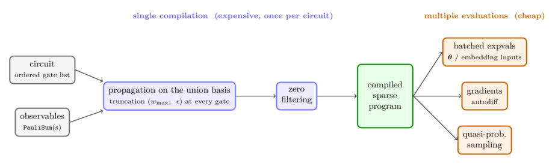
<figcaption class="paper-figure-caption"><b>Fig 1.</b> Figure 1: Overview of PADO-Pauli: a single compilation, with truncation applied at each propagation step, followed by multiple evaluations with gradients.</figcaption>
</figure>
<figure class="paper-figure-card">
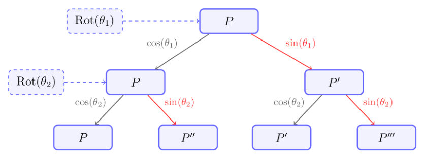
<figcaption class="paper-figure-caption"><b>Fig 2.</b> Figure 2: Conceptual branching tree for Pauli propagation under parameterized rotations: non-commuting gates split a Pauli string into cosine and sine branches. Rot(θℓ) is the rotation RG(θℓ) of Eq. (4), and P ′, P ′′, P ′′′ the distinct strings its successive sine branches produce.</figcaption>
</figure>
<figure class="paper-figure-card">
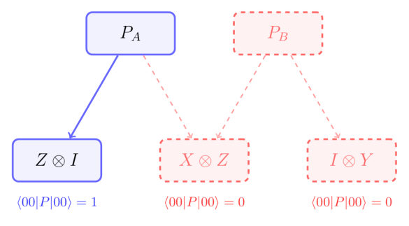
<figcaption class="paper-figure-caption"><b>Fig 3.</b> Figure 3: Zero-filtering at compile time. Solid blue, strings reaching a kept output row; dashed red, strings removed because Tr[ρ0P] = ⟨00|P|00⟩= 0 for them or for every string they produce.</figcaption>
</figure>
<figure class="paper-figure-card">
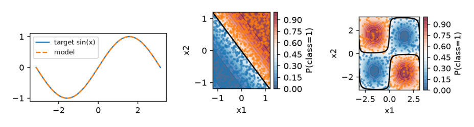
<figcaption class="paper-figure-caption"><b>Fig 4.</b> Figure 4: Trained models of the three embedding tasks of Sec. 3.3; (c) is the model of Listing 3. In (b) and (c): shading, the model’s P(class=1); points, the training set (class 0 blue, class 1 orange); black contours, the P = 0.5 decision boundary.</figcaption>
</figure>
<figure class="paper-figure-card">
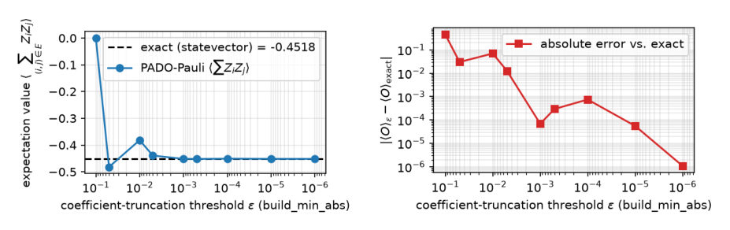
<figcaption class="paper-figure-caption"><b>Fig 5.</b> Figure 5: Convergence of coefficient truncation on a fixed 16-qubit, depth-3 Erdős–Rényi MaxCut-QAOA instance with max-weight truncation disabled. (a) truncated expectation value against the exact statevector value (dashed); (b) absolute error. In both panels the ϵ axis is logarithmic and reversed, running from 10−1 at the left to 10−6 at the right.</figcaption>
</figure>
</div>
<p><strong>Summary.</strong> This paper introduces PADO-Pauli, a highly optimized, GPU-accelerated toolkit for performing Pauli propagation—the classical evaluation of quantum circuit expectation values. By compiling circuits once and reusing the structure for batched evaluations with automatic differentiation, it drastically speeds up the training of variational quantum algorithms. This makes complex quantum simulations practical for modern quantum machine learning research.</p>
<p><strong>Why it may be interesting.</strong> This work provides a crucial, high-performance computational backend for implementing and training quantum machine learning models, which is vital for any theoretical physicist working on quantum algorithms.</p>
<details>
<summary>Detailed structure</summary>
<p><strong>Main problem.</strong> The paper addresses the need for an efficient classical method to evaluate expectation values of parameterized quantum circuits, which are central to training variational quantum algorithms (VQAs).</p>
<p><strong>Main result.</strong> PADO-Pauli is presented as a GPU-accelerated engine that significantly outperforms existing tools, achieving up to 10x speedup and lower memory usage compared to competitors.</p>
<p><strong>Method.</strong> It uses Pauli propagation in the Heisenberg picture, compiling the circuit and observables into sparse matrices that are reused for multiple evaluations, including native gradient calculation via PyTorch's automatic differentiation.</p>
<p><strong>Model / system.</strong> The system involves parameterized quantum circuits whose observables are represented as sums of Pauli strings. The method approximates the expectation value by evolving the observable through the circuit gates.</p>
<p><strong>Key observables.</strong> Expectation values of Pauli strings, Pauli weight, and coefficient size.</p>
<p><strong>Important parameters / regimes.</strong> Number of qubits (up to 28 checked), rotation angles ($ heta$), Pauli weight truncation limit ($w_{  ext{max}}$), and coefficient size threshold ($\epsilon$).</p>
<p><strong>Assumptions / limitations.</strong> The method relies on truncation (by Pauli weight and coefficient size) to keep the computation tractable, and the total error is bounded by the sum of discarded coefficient masses.</p>
<p><strong>Figures summary.</strong> Figure 1 provides an overview of the PADO-Pauli workflow, illustrating single compilation, step-wise truncation, and subsequent multiple evaluations with gradient tracking.</p>
<p><strong>Paper structure.</strong> The paper details the theoretical basis of Pauli propagation, introduces the PADO-Pauli GPU engine for compilation and evaluation, discusses various truncation and noise modeling techniques, and concludes with performance comparisons against state-of-the-art tools.</p>
</details>
<details>
<summary>Abstract</summary>
<p>Variational quantum algorithms utilize parameterized circuits many times during training, at new parameter values, over batches of data, and with gradients. Pauli propagation approximates the expectation values of such circuits classically by evolving the observable in the Heisenberg picture as a truncated sum of Pauli strings. We present PADO-Pauli, a GPU engine for Pauli propagation that compiles a circuit and its observables once into sparse matrices in which each rotation angle contributes only a cosine and a sine factor, so every later evaluation reuses the compiled program. It evaluates batches of parameters and data inputs embedded as rotation angles. By default its gradients come from a vector-Jacobian product registered with PyTorch's automatic differentiation, so they flow through the angles to any classical layer that produces them. PADO-Pauli also provides truncation by Pauli weight and coefficient size, and noise channels. Zero-filtering removes terms that do not contribute to an expectation value in the all-zero reference state and makes the batched forward pass about 1.5 times faster. Compared to cuPauliProp on an NVIDIA A100, PADO-Pauli evaluates up to 10 times faster on 4 to 12 qubits and uses up to 3.1 times less memory on 16 qubits. We check its accuracy against exact statevector simulation up to 28 qubits. These features make PADO-Pauli a practical toolkit for training variational quantum algorithms, including quantum machine learning models.</p>
</details>
<p><sub><a href="#top">↑ back to top</a></sub></p>

<p><a id="paper-2610.17797"></a></p>
<h3 id="proof-of-the-exact-correlation-length-exponent-math861math-and-algebraic-relations-for-math862math-and-math863math-in-the-3d-ising-model"><a href="http://arxiv.org/abs/2610.17797v1">Proof of the exact correlation-length exponent $ν= \frac{\sqrt[3]{2}}{2}$ and algebraic relations for $β$ and $γ$ in the 3D Ising model</a></h3>
<p><strong>Authors:</strong> Aleksandr Liivand<br>
<strong>Type:</strong> theory · <strong>Category:</strong> statistical mechanics · <strong>PDF:</strong> <a href="https://arxiv.org/pdf/2610.17797v1">https://arxiv.org/pdf/2610.17797v1</a><br>
<strong>Analysis basis:</strong> full PDF text, analyzed in chunks</p>
<div class="figure-strip-hint">↔ Scroll figures horizontally</div>
<div class="paper-figures-scroll">
<figure class="paper-figure-card">
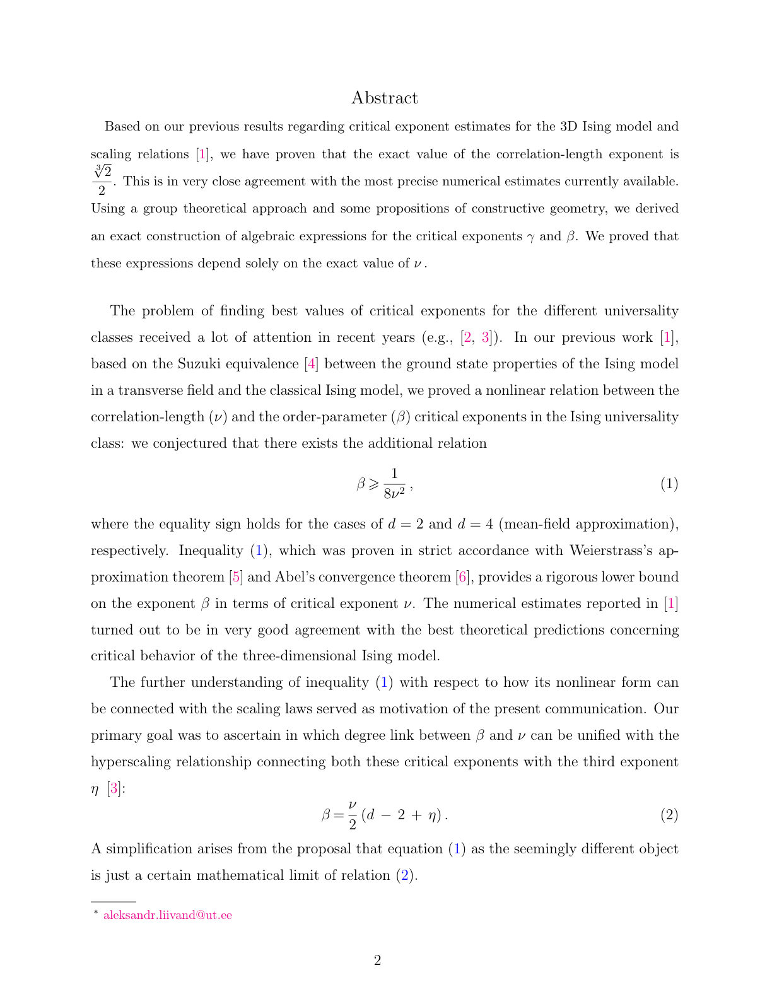
<figcaption class="paper-figure-caption"><b>Fig 1.</b> Low-resolution page preview, page 2</figcaption>
</figure>
<figure class="paper-figure-card">

<figcaption class="paper-figure-caption"><b>Fig 2.</b> Low-resolution page preview, page 3</figcaption>
</figure>
<figure class="paper-figure-card">
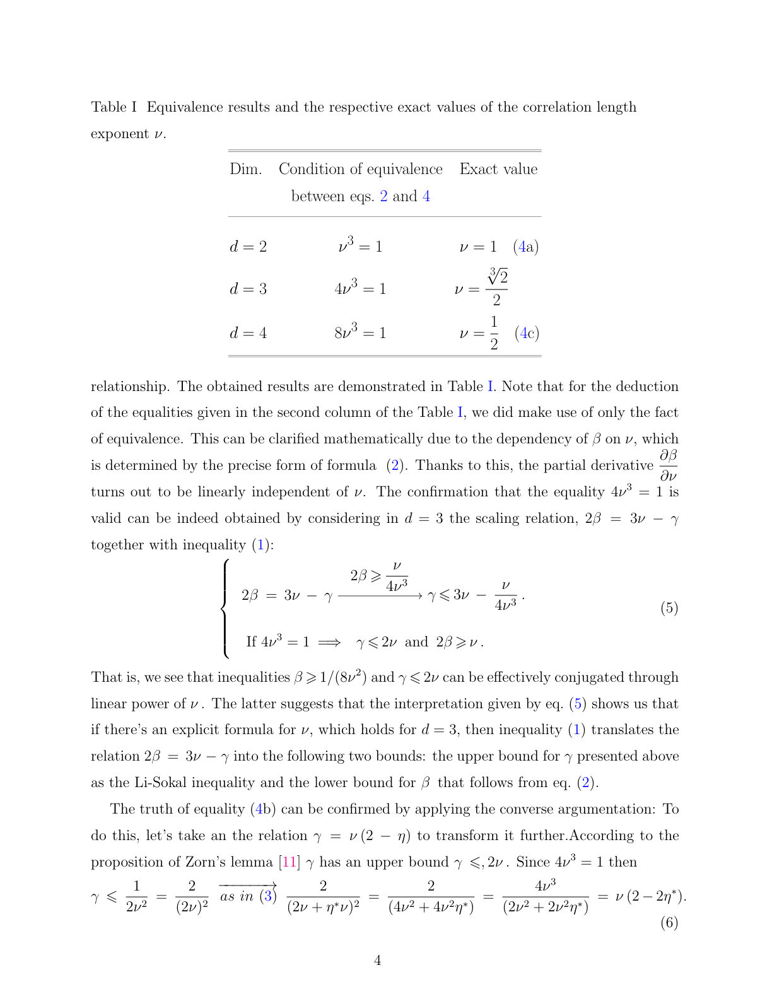
<figcaption class="paper-figure-caption"><b>Fig 3.</b> Low-resolution page preview, page 4</figcaption>
</figure>
<figure class="paper-figure-card">

<figcaption class="paper-figure-caption"><b>Fig 4.</b> Low-resolution page preview, page 5</figcaption>
</figure>
<figure class="paper-figure-card">
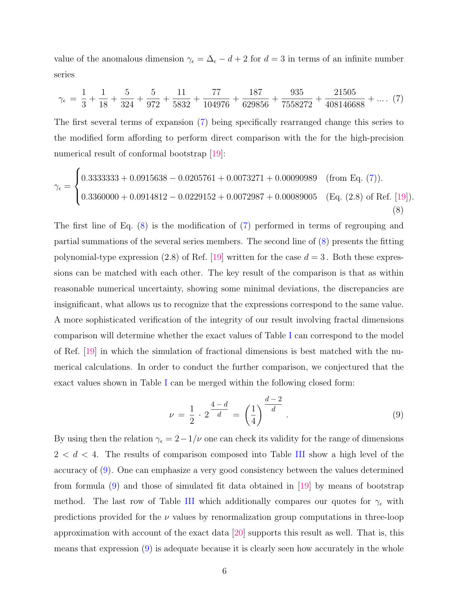
<figcaption class="paper-figure-caption"><b>Fig 5.</b> Low-resolution page preview, page 6</figcaption>
</figure>
</div>
<p><strong>Summary.</strong> This theoretical paper calculates the exact critical exponents for the 3D Ising model, proving that the correlation-length exponent $
u$ is $rac{\sqrt[3]{2}}{2}$. It achieves this by synthesizing scaling relations with advanced mathematical techniques, providing highly precise theoretical values for $eta$ and $\gamma$ that match modern numerical estimates.</p>
<p><strong>Why it may be interesting.</strong> While focused on classical statistical mechanics, the rigorous determination of critical exponents using advanced mathematical structures (like those involving algebraic integers) provides deep theoretical insights into critical phenomena that can inspire new mathematical techniques applicable to quantum critical points.</p>
<details>
<summary>Detailed structure</summary>
<p><strong>Main problem.</strong> The paper aims to determine the exact value of the correlation-length exponent ($
u$) and derive algebraic relations for the critical exponents ($eta$ and $\gamma$) in the 3D Ising model.</p>
<p><strong>Main result.</strong> The authors prove that the exact correlation-length exponent for the 3D Ising model is $
u = rac{\sqrt[3]{2}}{2}$, and they derive algebraic expressions for $eta$ and $\gamma$ based on this value.</p>
<p><strong>Method.</strong> The derivation employs a combination of group theoretical approaches, constructive geometry, and the unification of scaling relations derived from different theoretical bounds.</p>
<p><strong>Model / system.</strong> The study focuses on the critical behavior of the 3D Ising model, a canonical model for studying phase transitions.</p>
<p><strong>Key observables.</strong> Critical exponents: $
u$ (correlation-length exponent), $eta$, and $\gamma$.</p>
<p><strong>Important parameters / regimes.</strong> The spatial dimension $d$, particularly $d=3$.</p>
<p><strong>Assumptions / limitations.</strong> The derivation relies on unifying various scaling relations and comparing results against high-precision numerical estimates from Conformal Bootstrap and Renormalization Group methods.</p>
<p><strong>Figures summary.</strong> Table I shows equivalence conditions for $
u$ in $d=2, 3, 4$. Table II compares $
u$ estimates from various methods, confirming the derived value. Table III compares $\gamma_\epsilon$ using the proposed formula against bootstrap and RG data.</p>
<p><strong>Paper structure.</strong> The paper progresses by establishing scaling relations, deriving a general form for $
u$ based on dimension $d$, and then applying advanced mathematical tools (like Galois theory) to fix the exact value of $
u$ for $d=3$, subsequently determining $eta$ and $\gamma$.</p>
</details>
<details>
<summary>Abstract</summary>
<p>Based on our previous results regarding critical exponent estimates for the 3D Ising model and scaling relations [1], we have proven that the exact value of the correlation-length exponent is $\frac{\sqrt[3]{2}}{2}$. This is in very close agreement with the most precise numerical estimates currently available. Using a group theoretical approach and some propositions of constructive geometry, we derived an exact construction of algebraic expressions for the critical exponents $γ$ and $β$. We proved that these expressions depend solely on the exact value of $ν\,$.</p>
</details>
<p><sub><a href="#top">↑ back to top</a></sub></p>

<p><a id="paper-2610.17351"></a></p>
<h3 id="qgrat-quantum-grade-aware-transformer-for-jet-tagging"><a href="http://arxiv.org/abs/2610.17351v1">QGrAT: Quantum Grade-Aware Transformer for Jet Tagging</a></h3>
<p><strong>Authors:</strong> Pallavi Bhardwaj, Michael Spannowsky<br>
<strong>Type:</strong> theory · <strong>Category:</strong> quantum information and computing · <strong>PDF:</strong> <a href="https://arxiv.org/pdf/2610.17351v1">https://arxiv.org/pdf/2610.17351v1</a><br>
<strong>Analysis basis:</strong> full PDF text, analyzed in chunks</p>
<div class="figure-strip-hint">↔ Scroll figures horizontally</div>
<div class="paper-figures-scroll">
<figure class="paper-figure-card">

<figcaption class="paper-figure-caption"><b>Fig 1.</b> Figure 1: Geometric interpretation of the five grades in Cℓ(1,3) and the corresponding QGrAT features. The drawings schematically represent simple spacetime blades, with grade 4 shown as a projection of an oriented four-volume. The + signs select an orientation for the volumes. The component counts are the grade-subspace dimensions 4 g  , giving 1 + 4 + 6 + 4 + 1 = 16 basis blades. The implemented Ti sums weighted trivectors, while hi sums four-volume magnitudes and retains no orientation sign. All contractions use the Minkowski metric diag(+1,−1,−1,−1).</figcaption>
</figure>
<figure class="paper-figure-card">
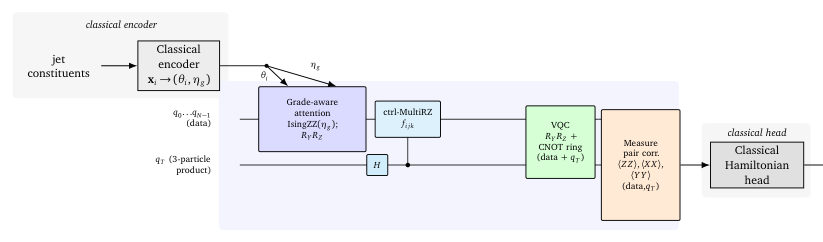
<figcaption class="paper-figure-caption"><b>Fig 2.</b> Figure 2: The two QGrAT quantum circuits studied in this work. Both share the classical encoder, grade-aware IsingZZ(ηg) attention, the three-particle-product ancilla tap, and the variational (VQC) mixer, and differ only in the readout stage. (a) Main model, an in-circuit readout qubit qr coupled to the data register and the three-particle-product ancilla qT. (b) Classical-readout variant, where qr is removed and Pauli pair correlators over the data and ancilla qubits feed a learned Hamiltonian-observable head. Shaded boxes are classical stages drawn only as the source of the circuit inputs. Gate-level building blocks appear in Figs. 3–4.</figcaption>
</figure>
<figure class="paper-figure-card">
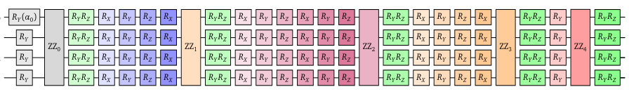
<figcaption class="paper-figure-caption"><b>Fig 3.</b> Figure 3: Full Grade-Aware Attention block at N=4 qubits (one per constituent), showing all active Clifford grades g ∈{0,1,2,3,4}. The mechanism is described in Section 4.3. Gray (grade 0, scalar p·P): one RY (α0) per qubit. Blue gradient (grade 1, four-momentum): RX(αE)RY (αpx)RZ(αpy)RX(αpz). Purple gradient (grade 2, bivector p∧P): RX RY RZ RX RY RZ, one per bivector blade. Orange gradient (grade 3, trivector Ti): RX RY RZ RX, one per trivector blade. Red (grade 4, four-volume magnitude hi): a single RX. The ZZg blocks (multi-qubit) carry the Clifford-pairing coupling angles η(i j) g , with the symmetry scope specified in Section 3.3, and the green RY RZ are independent variational...</figcaption>
</figure>
<figure class="paper-figure-card">
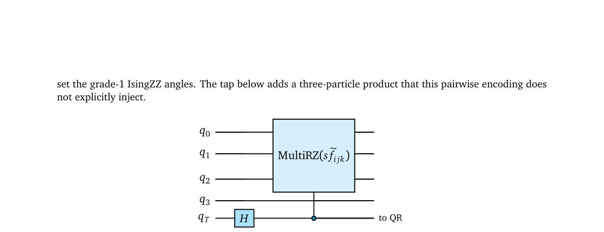
<figcaption class="paper-figure-caption"><b>Fig 4.</b> Figure 4: Block Tap: Hadamard-test ancilla tap at an illustrative N=4 data qubits. The generator and its gate realisation are given in Section 4.4. The ancilla is placed in |+〉by a Hadamard, controls a diagonal unitary on the data register, and is carried forward to the in-circuit readout qubit (“to QR”, Fig. 6), never measured directly. The cyan three-particle-product tap qT applies a controlled MultiRZ over data-qubit triples.</figcaption>
</figure>
<figure class="paper-figure-card">
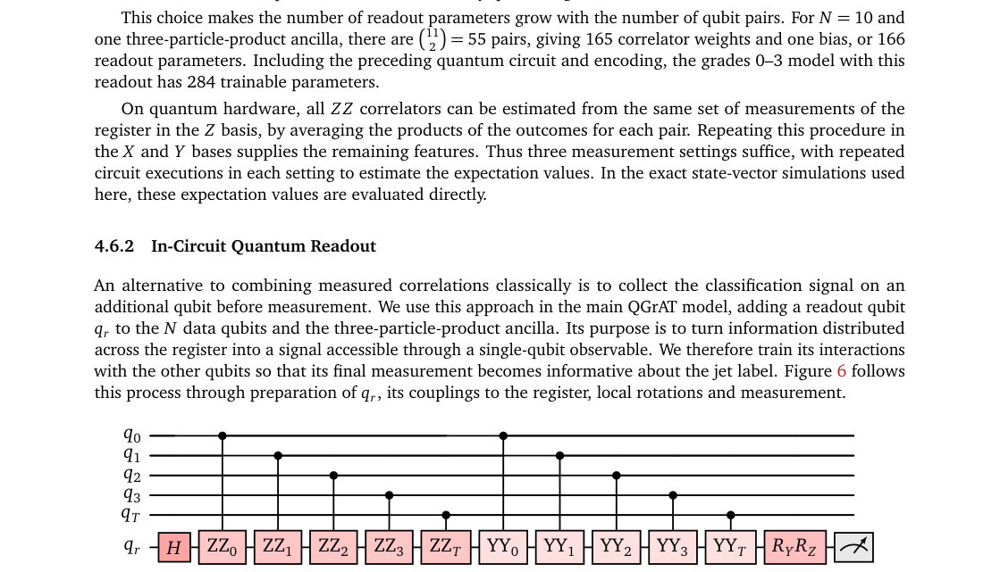
<figcaption class="paper-figure-caption"><b>Fig 5.</b> Figure 6: Block QR: in-circuit Quantum Readout on an auxiliary qubit qr, drawn at an illustrative N=4 data qubits plus the three-particle-product ancilla qT (any enabled ancilla is coupled the same way), see Section 4.6.2. Dark red: Hadamard places qr in |+〉. Red blocks: individual IsingZZ(λZ i ) and IsingYY(λY i ) two-qubit gates between qr and each of the data qubits and qT, shown with a control dot on the data/ancilla wire and the gate label on qr. Light red: learned basis rotation RY (µ0) followed by RZ(µ1) on qr. Grey: 〈Zr〉 measurement, feeding ℓ= a〈Zr〉+ b.</figcaption>
</figure>
</div>
<p><strong>Summary.</strong> This paper introduces QGrAT, a novel quantum transformer designed for jet tagging in high-energy physics by embedding the Lorentz symmetry of spacetime into its attention mechanism. It utilizes the structure of the Clifford algebra to define invariant couplings between constituent qubits. The resulting model shows strong performance, demonstrating that explicitly modeling three-particle interactions is key to improving background rejection.</p>
<p><strong>Why it may be interesting.</strong> While focused on particle physics, the core methodology—encoding physical symmetries (Lorentz invariance) into the structure of quantum gates and attention mechanisms—is highly relevant for developing physically constrained quantum machine learning models.</p>
<details>
<summary>Detailed structure</summary>
<p><strong>Main problem.</strong> The paper addresses the challenge of designing compact quantum jet taggers capable of identifying highly boosted heavy particles by incorporating fundamental physical symmetries.</p>
<p><strong>Main result.</strong> The proposed QGrAT architecture achieved competitive performance (AUC 0.944) on top tagging benchmarks, with the explicit inclusion of three-particle correlations significantly boosting background rejection.</p>
<p><strong>Method.</strong> The method introduces QGrAT, a quantum transformer that encodes geometric features derived from particle four-momenta using the structure of the spacetime Clifford algebra $   ext{C}\ell(1,3)$.</p>
<p><strong>Model / system.</strong> The model is a quantum transformer operating on constituent qubits, where attention couplings are determined by Lorentz-invariant inner products derived from the grades of the Clifford algebra. The system is tested using state-vector simulation on Top Tagging benchmarks.</p>
<p><strong>Key observables.</strong> Area Under the Curve (AUC), background rejection ($1/\epsilon_B$), and signal efficiency ($\epsilon_S$).</p>
<p><strong>Important parameters / regimes.</strong> Ten constituents per jet; the use of grades 0-3 and an auxiliary three-particle qubit.</p>
<p><strong>Assumptions / limitations.</strong> The component-wise input encoding makes the complete classifier frame dependent, even though the attention couplings are Lorentz invariant.</p>
<p><strong>Figures summary.</strong> Figure 1 illustrates the geometric interpretation of the five grades in $  ext{C}\ell(1,3)$ and maps them to the QGrAT features used in the quantum circuit.</p>
<p><strong>Paper structure.</strong> The paper builds mathematically by first introducing the Clifford algebra, then proving the Lorentz invariance of the grade-specific inner products, detailing the quantum circuit construction, and finally presenting performance evaluations and analysis.</p>
</details>
<details>
<summary>Abstract</summary>
<p>Lorentz symmetry and the three-prong structure of hadronic top decays provide physical guidance for designing compact quantum jet taggers. We introduce QGrAT (Quantum Grade-Aware Transformer), a quantum transformer that incorporates these structures into its interactions between constituent qubits. Geometric features constructed from the constituent four-momenta are organised by the grades of the spacetime Clifford algebra $C\ell(1,3)$, and their grade-specific inner products determine the pairwise attention couplings. For fixed constituents and co-transforming reference vectors, these couplings are Lorentz invariant, although the component-wise input encoding makes the complete classifier frame dependent. An auxiliary qubit introduces an explicit three-particle interaction through products of pairwise Minkowski inner products, while a trainable in-circuit readout converts the resulting quantum state into a classification score. We evaluate the architecture in state-vector simulation on the Top Tagging benchmarks. With ten constituents per jet, the configuration using grades $0\text{-}3$ and the three-particle ancilla requires twelve qubits and $144$ trainable parameters, reaching AUC $0.944 \pm 0.002$ and background rejection $1/\varepsilon_B = 35.7 \pm 2.4\ (96.8 \pm 7.7)$ at signal efficiency $\varepsilon_S = 0.50\ (0.30)$. This performance is competitive with the L-GATr-Slim baseline at matched constituent and parameter budgets. Adding the three-particle ancilla raises background rejection at $50\%$ signal efficiency from $19.9$ to $35.7$, whereas extending the representation to the tested grade-$4$ feature gives no consistent improvement. The study establishes a framework for incorporating spacetime geometry into quantum attention and identifies explicit three-particle correlations as the principal source of improved background rejection among the architectural variations tested.</p>
</details>
<p><sub><a href="#top">↑ back to top</a></sub></p>

<p><a id="paper-2610.18785"></a></p>
<h3 id="relative-entropy-geometry-and-convergence-in-nonconvex-wiretap-optimization"><a href="http://arxiv.org/abs/2610.18785v1">Relative-Entropy Geometry and Convergence in Nonconvex Wiretap Optimization</a></h3>
<p><strong>Authors:</strong> Farzin Salek, Masahito Hayashi<br>
<strong>Type:</strong> both · <strong>Category:</strong> quantum information and computing · <strong>PDF:</strong> <a href="https://arxiv.org/pdf/2610.18785v1">https://arxiv.org/pdf/2610.18785v1</a><br>
<strong>Analysis basis:</strong> full PDF text, analyzed in chunks</p>
<div class="figure-strip-hint">↔ Scroll figures horizontally</div>
<div class="paper-figures-scroll">
<figure class="paper-figure-card">
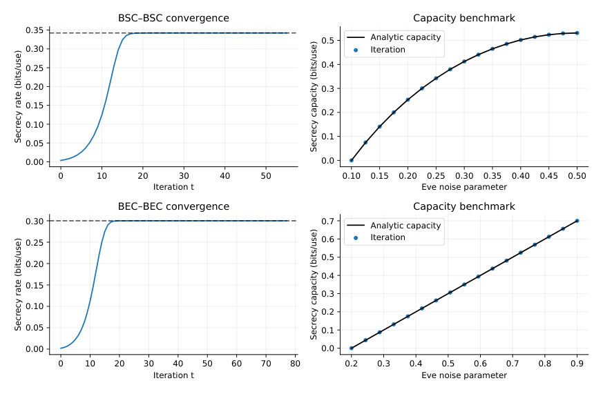
<figcaption class="paper-figure-caption"><b>Fig 1.</b> Figure 1: Known-capacity checks. Top: BSC–BSC with Bob crossover p1 = 0.1; the trajectory uses Eve crossover p2 = 0.25. Bottom: BEC–BEC with Bob erasure ϵ1 = 0.2; the trajectory uses Eve erasure ϵ2 = 0.5. The sweep markers agree with the analytic capacities at the displayed precision.</figcaption>
</figure>
<figure class="paper-figure-card">
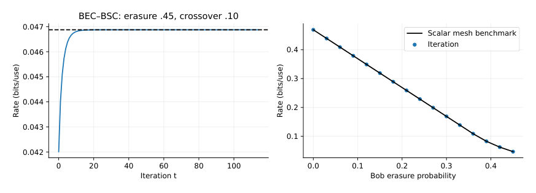
<figcaption class="paper-figure-caption"><b>Fig 2.</b> Figure 2: BEC–BSC validation with Eve crossover ϵ = 0.1. Left: a selected trajectory for Bob erasure α = 0.45. Right: comparison with the scalar mesh benchmark over 0 ≤α ≤0.45. The more-capable condition makes U = X sufficient throughout this sweep.</figcaption>
</figure>
<figure class="paper-figure-card">

<figcaption class="paper-figure-caption"><b>Fig 3.</b> Figure 3: Channel 1. Left: the nonconcave objective with U = X. Right: three initializations of the joint iteration, continued through the numerical stopping test. The iteration axis is linear close to zero and logarithmic thereafter, so both the early transient and later approach are visible. The lower positive trajectory approaches an off-diagonal law.</figcaption>
</figure>
<figure class="paper-figure-card">
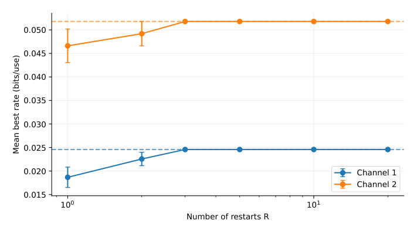
<figcaption class="paper-figure-caption"><b>Fig 4.</b> Figure 4: Mean best-of-R terminal rate, with one-standard-error bars across 20 independent trials of nested random starts. Dashed lines are the finer convex-envelope mesh benchmarks. Mesh values approximate the global optimum from below.</figcaption>
</figure>
<figure class="paper-figure-card">
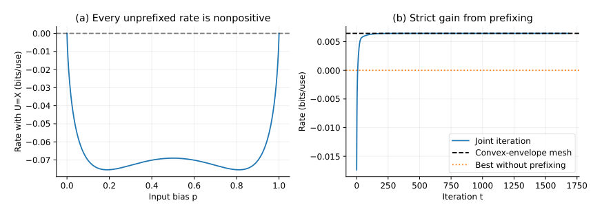
<figcaption class="paper-figure-caption"><b>Fig 5.</b> Figure 5: Bob BSC(0.1), Eve BEC(0.4). Left: every rate with U = X is nonpositive. Right: the joint iteration finds a positive rate of approximately 0.00645039 bits/use, consistent with the finer convex-envelope mesh benchmark.</figcaption>
</figure>
</div>
<p><strong>Summary.</strong> This work introduces an entropic descent method to solve the nonconvex optimization problem of maximizing secrecy capacity in wiretap channels. By leveraging relative-entropy identities, the authors prove quantitative descent and convergence for both classical and quantum settings. This provides a powerful, general framework for analyzing information-theoretic limits in secure quantum communication.</p>
<p><strong>Why it may be interesting.</strong> The rigorous mathematical tools developed for convergence in nonconvex optimization (entropic descent, KL arguments) are highly relevant for analyzing complex quantum information tasks where capacity calculations are non-convex.</p>
<details>
<summary>Detailed structure</summary>
<p><strong>Main problem.</strong> The paper develops and analyzes an entropic descent method to optimize the secrecy capacity of a wiretap channel, which is formulated as a nonconvex optimization problem.</p>
<p><strong>Main result.</strong> The method establishes quantitative descent and convergence guarantees for the objective function value for arbitrary finite classical channels, and extends these techniques to noncommuting quantum outputs.</p>
<p><strong>Method.</strong> It employs an entropic descent method, utilizing an exact relative-entropy identity to derive a channel-independent majorization bound and an explicit mirror-descent iteration.</p>
<p><strong>Model / system.</strong> The model is a wiretap channel, analyzed in both classical and quantum settings. Optimization variables define a randomized encoder, jointly optimizing the input distribution and stochastic preprocessing.</p>
<p><strong>Key observables.</strong> Secrecy capacity ($C_S$), objective function $F(p) = I(U; Z)_p - I(U; Y)_p$, and the relative entropy $D(\cdot \| \cdot)$.</p>
<p><strong>Important parameters / regimes.</strong> The analysis considers regimes ranging from arbitrary finite channels to strictly positive transition matrices and noncommuting quantum outputs.</p>
<p><strong>Assumptions / limitations.</strong> Convergence proofs rely on assumptions such as channel positivity (for full convergence) or the existence of a quantum score identity.</p>
<p><strong>Figures summary.</strong> Figure 7 compares the private information rate for a noncommuting channel against independent convex-envelope benchmarks, showing the benefit of stochastic preprocessing.</p>
<p><strong>Paper structure.</strong> The paper first establishes the entropic descent for classical channels, proving convergence via Kurdyka–Łojasiewicz arguments. It then extends this framework to quantum settings, deriving quantum score identities and monotone alternating updates for covariant encoders.</p>
</details>
<details>
<summary>Abstract</summary>
<p>We develop and analyze an entropic descent method for a nonconvex optimization problem on probability simplices arising in classical and quantum secure communication. The optimization variables describe a randomized encoder, allowing its input distribution and stochastic preprocessing to be optimized jointly. An exact relative-entropy identity yields a channel-independent majorization bound and an explicit mirror-descent iteration with a fixed unit step size. We establish quantitative descent, convergence of objective values, and stationarity of accumulation points on their support faces for arbitrary finite classical channels, without assuming degradedness or less noisiness. For strictly positive transition matrices, a square-root parametrization and a Kurdyka--Łojasiewicz argument establish finite length of the transformed trajectory and convergence of the entire sequence, including limits on the simplex boundary. For less-noisy channels, a restricted convex formulation admits global convergence with an explicit \(O(1/t)\) objective-error bound. We extend the relative-entropy construction to noncommuting quantum outputs and derive monotone alternating updates for covariant encoders, including correlated preprocessing over a fixed block. Numerical experiments compare the method with analytic benchmarks and constrained optimization, reveal multiple attracting values, and demonstrate strict improvements from stochastic preprocessing.</p>
</details>
<p><sub><a href="#top">↑ back to top</a></sub></p>

<p><a id="paper-2610.18086"></a></p>
<h3 id="supersymmetric-observables-from-surface-defect-anomalies-in-4d-and-6d-scfts"><a href="http://arxiv.org/abs/2610.18086v1">Supersymmetric Observables from Surface Defect Anomalies in 4d and 6d SCFTs</a></h3>
<p><strong>Authors:</strong> Zi-Xiao Huang, Ma-Ke Yuan, Yang Zhou<br>
<strong>Type:</strong> theory · <strong>Category:</strong> other · <strong>PDF:</strong> <a href="https://arxiv.org/pdf/2610.18086v1">https://arxiv.org/pdf/2610.18086v1</a><br>
<strong>Analysis basis:</strong> full PDF text, analyzed in chunks</p>
<div class="figure-strip-hint">↔ Scroll figures horizontally</div>
<div class="paper-figures-scroll">
<figure class="paper-figure-card">

<figcaption class="paper-figure-caption"><b>Fig 1.</b> Figure 1. Geometries for the defect observables. Left: a surface defect wrapping S1 β × S1 in S1 β × Sd−1, as used to define the dSCE. Right: a planar surface defect (orange plane) intersecting the spherical entangling surface Sd−2 (blue) on the t = 0 slice of Rd−1,1, as used to define the dSRE.</figcaption>
</figure>
<figure class="paper-figure-card">

<figcaption class="paper-figure-caption"><b>Fig 2.</b> Figure 2. The linear quiver diagram of the 2d GLSM description corresponding to the GW surface defect. We adapt the (2, 2) field content in the figure. The dashed line represents the (2, 2) chiral multiplet Xi for each gauge group U(pi), i = 1, . . . , ν −1. There is also one (2, 2) vector multiplet Vi for each gauge group U(pi). The solid lines connecting U(pi) and U(pi+1) represent the (2, 2) (anti-)bifundamental chiral multiplets Φi(i+1) and Φ(i+1)i. The 2d GLSM is coupled to the 4d ambient theory by gauging the global symmetry SU(N).</figcaption>
</figure>
<figure class="paper-figure-card">
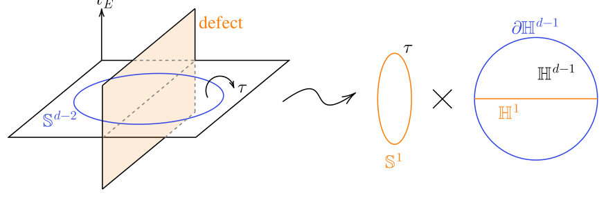
<figcaption class="paper-figure-caption"><b>Fig 3.</b> Figure 3. A conformal transformation maps the ambient spacetime Rd to S1 × Hd−1, the planar surface defect R2 ⊂Rd to S1 × H1 ⊂S1 × Hd−1, and the spherical entangling surface Sd−2 to the boundary of Hd−1. After the replica trick, the thermal circle S1 becomes S1 n.</figcaption>
</figure>
</div>
<p><strong>Summary.</strong> This theoretical paper calculates fundamental quantum observables, specifically supersymmetric Casimir energy and Rényi entropy, arising from surface defects in higher-dimensional SCFTs. It employs advanced techniques like equivariant integration of anomaly polynomials and verifies results using holographic brane dynamics. The findings establish a precise relationship between these quantum entanglement measures and the underlying gauge theory anomalies.</p>
<p><strong>Why it may be interesting.</strong> While highly theoretical, the connection between anomaly coefficients (topological invariants) and quantum entanglement measures (Rényi entropy) provides deep insights into the structure of quantum field theories, which is relevant for understanding entanglement in complex quantum systems.</p>
<details>
<summary>Detailed structure</summary>
<p><strong>Main problem.</strong> The paper investigates the contributions of half-BPS surface defects to supersymmetric Casimir energy and the universal logarithmic term of supersymmetric Rényi entropy in 4D and 6D Superconformal Field Theories (SCFTs).</p>
<p><strong>Main result.</strong> The observables are found to depend on specific anomaly coefficients, with 6D theories exhibiting additional contributions from the gravitational anomaly compared to 4D theories.</p>
<p><strong>Method.</strong> The primary methods involve equivariant integration of defect anomaly polynomials, extending these techniques to supersymmetric Rényi backgrounds, and using complementary checks like chiral algebras and holographic brane calculations.</p>
<p><strong>Model / system.</strong> The study focuses on 4D $\mathcal{N}=4$ Super Yang-Mills theories with Gukov–Witten defects, and 6D $\mathcal{N}=(1, 0)$ SCFTs. The analysis utilizes concepts from string theory compactifications, such as probe D4-branes in AdS$_7 \times M_3$.</p>
<p><strong>Key observables.</strong> Supersymmetric Casimir energy (dSCE) and the universal logarithmic term of supersymmetric Rényi entropy (dSRE).</p>
<p><strong>Important parameters / regimes.</strong> The analysis depends on R-symmetry anomaly coefficients ($k_R$) and gravitational anomaly coefficients ($k_g$).</p>
<p><strong>Assumptions / limitations.</strong> The calculations assume that anomaly control fixes the contributions without solving the full bulk-defect dynamics, and specific background solutions (like $F_0=0$) are used for brane calculations.</p>
<p><strong>Figures summary.</strong> Figure 1 illustrates geometries for dSCE (surface defect wrapping $S^1_\beta \times S^1$ in $S^1_\beta \times S^{d-1}$) and dSRE (planar defect intersecting spherical entangling surface).</p>
<p><strong>Paper structure.</strong> The paper develops the framework by first defining the observables, then applying anomaly integration techniques for 4D and 6D theories, and finally verifying results using holographic brane actions and equation of motion checks.</p>
</details>
<details>
<summary>Abstract</summary>
<p>We study the contributions of half-BPS surface defects to supersymmetric Casimir energy and the universal logarithmic term of supersymmetric Rényi entropy in four- and six-dimensional SCFTs. Using equivariant integration of defect anomaly polynomials and its extension to supersymmetric Rényi backgrounds, we obtain closed expressions for these observables in terms of defect 't Hooft anomalies. For Gukov--Witten defects preserving transverse rotations in four-dimensional $\mathcal{N} = 4$ super Yang--Mills theories, both observables depend on a single R-symmetry anomaly. For $\mathcal{N} = (0, 4)$ defects in six-dimensional $\mathcal{N} = (1, 0)$ theories, additional terms arise from the gravitational anomaly. We provide complementary checks using chiral algebras, five-dimensional localization, and holographic probe branes at large $N$, while localized chiral fermions reproduce the gravitational-anomaly contributions. The framework also recovers Wilson-surface results in six-dimensional $\mathcal{N} = (2, 0)$ theories.</p>
</details>
<p><sub><a href="#top">↑ back to top</a></sub></p>

<p><a id="paper-2610.17632"></a></p>
<h3 id="toward-interpretable-quantum-generators-for-financial-returns-through-problem-informed-circuit-design"><a href="http://arxiv.org/abs/2610.17632v1">Toward Interpretable Quantum Generators for Financial Returns through Problem-Informed Circuit Design</a></h3>
<p><strong>Authors:</strong> Huijie Guan, Xuanhao Wang, Shengbin Wang, Jiale Zhang, Jian Ding, Shuxin Xie, Dongdong Li, Jianjian Gao, Hantao Sun, Wenhao Chu<br>
<strong>Type:</strong> theory · <strong>Category:</strong> quantum information and computing · <strong>PDF:</strong> <a href="https://arxiv.org/pdf/2610.17632v1">https://arxiv.org/pdf/2610.17632v1</a><br>
<strong>Analysis basis:</strong> full PDF text, analyzed in chunks</p>
<div class="figure-strip-hint">↔ Scroll figures horizontally</div>
<div class="paper-figures-scroll">
<figure class="paper-figure-card">
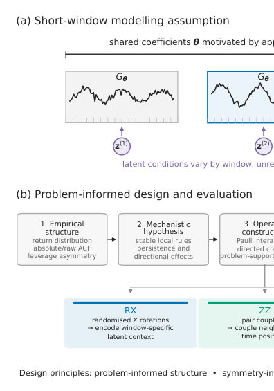
<figcaption class="paper-figure-caption"><b>Fig 1.</b> Fig. 1 Problem-informed generator design. (a) Window-specific latent variables z(w) represent unresolved conditions and innovations, while shared coefficients θ encode the approximate temporal- homogeneity prior. (b) The design and testing workflow maps empirical structure to operator-role hypotheses and evaluates their statistical consequences. Ablations are shown as further tests.</figcaption>
</figure>
<figure class="paper-figure-card">
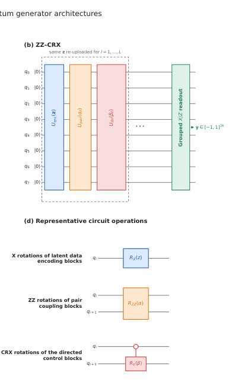
<figcaption class="paper-figure-caption"><b>Fig 2.</b> Fig. 2 Problem-informed quantum generator architectures. All three generators act on eight qubits and produce the grouped expectation-value vector in Eq. (10). Dashed enclosures show the layer schedules for (a) ZZ, (b) ZZ–CRX, and (c) Time evolution. (d) Representative circuit operations; basis-dual and mixed-basis boundary operations are omitted for visual economy.</figcaption>
</figure>
<figure class="paper-figure-card">

<figcaption class="paper-figure-caption"><b>Fig 3.</b> Fig. 3 Representative marginal diagnostics. (a) Return densities for Bitcoin and the selected representatives ZZ L3/run 2, ZZ–CRX L1/run 1, time-evolution L4/run 0, TCNN W6/run 2, and the two-parameter classical control/run 1. (b) Generated minus Bitcoin quantiles on the common 240-point probability grid. The grey region is a 95% pointwise empirical-resampling envelope from 10,000 fixed-seed complete-window resamples of 2,297 windows each. It describes variability under window resampling, without accounting for serial dependence between overlapping historical windows. This figure reports representative configurations under the marginal-only selection rule and is not a formal...</figcaption>
</figure>
<figure class="paper-figure-card">
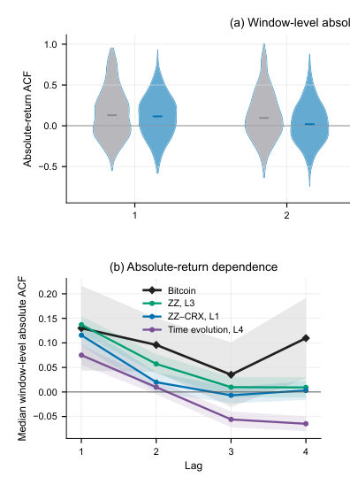
<figcaption class="paper-figure-caption"><b>Fig 4.</b> Fig. 4 Short-window temporal structure. (a) Window-level absolute-return ACF distributions for Bitcoin and ZZ–CRX L1 at lags 1–4; violins show densities and horizontal segments mark medians. (b) Median absolute-return ACF for Bitcoin and the selected ZZ L3, ZZ–CRX L1, and time-evolution L4 representatives. (c) Differences in median leverage between ZZ–CRX and ZZ at matched depths; negative values indicate lower leverage under ZZ–CRX. Shading shows 95% simultaneous max-t bootstrap intervals over the four lags, for the medians in (b) and the differences in (c). Configurations were selected using marginal criteria. The leverage comparison uses independently trained runs and is not a controlled...</figcaption>
</figure>
<figure class="paper-figure-card">

<figcaption class="paper-figure-caption"><b>Fig 5.</b> Figure 5 shows the marginal and lag-averaged temporal objectives over the two parameters of three selected problem-informed configurations.</figcaption>
</figure>
</div>
<p><strong>Summary.</strong> This work proposes a novel, problem-informed framework to build interpretable quantum generators for modeling financial returns using a QGAN. By embedding domain knowledge—such as expected correlations and asymmetries—into the quantum circuit structure, the authors demonstrate that compact circuits can capture complex statistical features. This advances the field by linking explicit structural assumptions directly to the observable performance of quantum models.</p>
<p><strong>Why it may be interesting.</strong> While applied to finance, the methodology of imposing physical/structural constraints (like symmetry or known correlations) to guide quantum circuit ansatz design is highly relevant for developing physically meaningful quantum machine learning models in AMO physics.</p>
<details>
<summary>Detailed structure</summary>
<p><strong>Main problem.</strong> The paper addresses the interpretability and trainability trade-off when using quantum circuits as function approximators for complex tasks like financial return generation.</p>
<p><strong>Main result.</strong> The proposed problem-informed framework successfully guides the design of compact quantum generators that recover meaningful marginal and temporal distributional features of financial returns.</p>
<p><strong>Method.</strong> They employ a hybrid Wasserstein Quantum Generative Adversarial Network (QGAN) trained on financial data, guiding the quantum circuit design using structural assumptions like relational structure and symmetry-inspired parameter sharing.</p>
<p><strong>Model / system.</strong> The model uses quantum circuits (ZZ, directed ZZ-CRX, structured time evolution) to generate 16-step Bitcoin return windows. The circuit structure is explicitly informed by the statistical properties of the financial data.</p>
<p><strong>Key observables.</strong> Marginal distribution fidelity, short-range absolute-return dependence, and median leverage shift.</p>
<p><strong>Important parameters / regimes.</strong> Number of trainable coefficients (1 to 8) and circuit depth (1 to 4 layers).</p>
<p><strong>Assumptions / limitations.</strong> The core assumption is that structural assumptions derived from the physical problem (finance) can guide the design of compact, efficient quantum generators.</p>
<p><strong>Figures summary.</strong> Figure 1 illustrates the workflow from empirical financial structure to mechanistic hypothesis, leading to operator construction and falsifiable predictions.</p>
<p><strong>Paper structure.</strong> The paper follows a structure moving from identifying the scientific problem (interpretability in QML) to proposing a problem-informed framework, detailing the QGAN setup and circuit design, presenting results on distributional recovery, and concluding with implications for systematic circuit design.</p>
</details>
<details>
<summary>Abstract</summary>
<p>When used as function approximators, quantum circuits often lack interpretability and face a fundamental trade-off between expressivity and trainability. We propose a problem-informed framework for financial return generation that uses relational structure and symmetry-inspired parameter sharing to guide the construction of quantum circuits with few trainable parameters and empirically testable operator roles. We evaluate three quantum generator architectures, referred to as ZZ, directed ZZ-CRX, and structured time evolution, within a hybrid Wasserstein quantum generative adversarial network trained to generate 16-step Bitcoin return windows. Across circuits with one to four layers and one to eight trainable coefficients, these generators recover meaningful marginal and temporal distributional features, while single-layer configurations remain competitive with deeper variants. Across matched depths, independently trained ZZ-CRX configurations exhibit a predominantly downward shift in median leverage relative to ZZ, consistent with the intended directional role of the controlled-rotation construction. The small number of coefficients also enables direct landscape analysis, revealing competing parameter preferences between marginal and temporal objectives and helping to explain the difficulty of finding parameter settings that perform well on both. These results provide an initial demonstration that structural assumptions can guide the design of compact quantum generators and link circuit architecture to observable statistical behaviour, motivating more systematic and parameter-efficient approaches to quantum circuit construction.</p>
</details>
<p><sub><a href="#top">↑ back to top</a></sub></p>

<p><a id="paper-2610.17236"></a></p>
<h3 id="whither-quantum-advantage-new-classical-lower-bounds-for-max-cut-on-large-girth-3-regular-graphs"><a href="http://arxiv.org/abs/2610.17236v1">Whither quantum advantage? New classical lower bounds for Max-Cut on large-girth 3-regular graphs</a></h3>
<p><strong>Authors:</strong> Flaviano Morone, Shivang Rawat, Dries Sels<br>
<strong>Type:</strong> theory · <strong>Category:</strong> disordered systems and neural networks · <strong>PDF:</strong> <a href="https://arxiv.org/pdf/2610.17236v1">https://arxiv.org/pdf/2610.17236v1</a><br>
<strong>Analysis basis:</strong> full PDF text, analyzed in chunks</p>
<div class="figure-strip-hint">↔ Scroll figures horizontally</div>
<div class="paper-figures-scroll">
<figure class="paper-figure-card">

<figcaption class="paper-figure-caption"><b>Fig 1.</b> FIG. 1. Section of a 3-regular graph of girth g ≥6. The radius-2 neighborhood of an edge (u, v), consisting of the 14 vertices within distance 2 of u or v, and the 13 edges incident to u, v and their neighbors. The girth forces this tree structure. Any further edge among these vertices must join two leaves (since every other vertex already has degree 3) and it is allowed only if the two leaves lie on opposite sides of (u, v), where it closes a cycle of length 6 (dashed edge).</figcaption>
</figure>
<figure class="paper-figure-card">
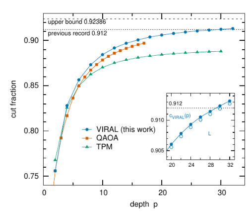
<figcaption class="paper-figure-caption"><b>Fig 2.</b> FIG. 2. Cut fraction versus depth on 3-regular graphs of girth g ≥2p + 2. Tree values cVIRAL(p) of Table I (cir- cles), QAOA values of Ref. [4] (squares) and explicit vector algorithm (TPM) of Ref. [8] (triangles). Statistical errors are smaller than the symbols. The dashed line is the up- per bound 0.92386 of Eq. (2), the dotted line the previous asymptotic lower bound 0.912. Inset: p ≥20, with the lower confidence bound L of Table I (open circles), which crosses 0.912 at p = 32. Lines are guides to the eye.</figcaption>
</figure>
<figure class="paper-figure-card">

<figcaption class="paper-figure-caption"><b>Fig 3.</b> FIG. 3. VIRAL with p = 2 layers on the graph of Fig. 1 traced backwards from the output. (a), The cut variables σu, σv need su(2) and sv(2). (b), Through Eq. (3) these need the states at n = 1 of u, v and their four other neighbors a1, a2, b1, b2. No state of a leaf is needed at n = 1 or n = 2. (c), These six states need the seeds of all 14 vertices. The leaves enter only through their seeds, so the edges joining two leaves, such as the dashed one, play no role. Hence (σu, σv) is a fixed function of the 14 i.i.d. seeds on the tree of Fig. 1, the same for every edge of every 3-regular graph of girth g ≥6.</figcaption>
</figure>
</div>
<p><strong>Summary.</strong> This paper investigates the Max-Cut problem on large-girth 3-regular graphs to test for quantum advantage. By analyzing the local structure using a classical algorithm called VIRAL, the authors derive rigorous lower bounds on the maximum cut fraction. These classical bounds surpass those from the QAOA for moderate depths, suggesting that quantum computation may not offer an exponential advantage for this specific optimization task.</p>
<p><strong>Why it may be interesting.</strong> This work directly addresses the question of quantum advantage for combinatorial optimization problems like Max-Cut, providing concrete evidence that classical local algorithms can match or surpass current quantum algorithm performance on structured graphs.</p>
<details>
<summary>Detailed structure</summary>
<p><strong>Main problem.</strong> The paper aims to determine the maximum cut fraction ($M_g$) for 3-regular graphs with large girth ($g$), challenging the notion of quantum advantage in optimization.</p>
<p><strong>Main result.</strong> A classical local algorithm (VIRAL) provides rigorous lower bounds for $M_g$ that exceed those obtained from the QAOA for depths $p \ge 4$, suggesting quantum advantage may not exist for this problem.</p>
<p><strong>Method.</strong> The authors analyze the expected cut fraction on the tree structure formed by the radius-$p$ neighborhood of an edge, using the Variational Iterative Rotation Algorithm (VIRAL) to establish these bounds.</p>
<p><strong>Model / system.</strong> The model is the Max-Cut problem applied to 3-regular graphs, specifically focusing on the behavior of these graphs as their girth ($g$) becomes very large. The analysis relies on the local structure (tree approximation) around any given edge.</p>
<p><strong>Key observables.</strong> The maximum cut fraction $M_g$, and the derived lower bound $c_{	ext{VIRAL}}(p)$ based on the depth-$p$ tree structure.</p>
<p><strong>Important parameters / regimes.</strong> The depth parameter $p$ (related to girth $g$ by $g \ge 2p+2$), and the confidence level used for statistical bounding (e.g., 99.99999%).</p>
<p><strong>Assumptions / limitations.</strong> The primary assumption is that for large girth, the local structure around any edge can be accurately modeled by a tree, allowing the cut fraction to be determined by local algorithms.</p>
<p><strong>Figures summary.</strong> Figures illustrate the structure of the radius-2 neighborhood of an edge in a 3-regular graph, and plots compare the cut fraction achieved by VIRAL, QAOA, and TPM across different depths.</p>
<p><strong>Paper structure.</strong> The paper establishes the theoretical framework for $M_g$ using local algorithms, applies the VIRAL algorithm to the depth-$p$ tree, compares its resulting bounds against established quantum (QAOA) and classical benchmarks (TPM), and concludes that classical methods match or exceed quantum performance.</p>
</details>
<details>
<summary>Abstract</summary>
<p>Every 3-regular graph of girth at least $g$ has a cut containing at least a fraction $M_g$ of its edges, and the best rigorous bounds at large girth are $0.912\le \lim_{g\to\infty}M_g \le 0.92386$. Lower bounds on $M_g$ follow from the performance of local algorithms: on a graph of girth $g \ge 2p+2$ a depth-$p$ local algorithm sees the same tree around every edge, so its expected cut fraction on that tree bounds $M_g$ from below. We apply this strategy to the Variational Iterative Rotation Algorithm (VIRAL), a classical local algorithm, and evaluate it on the depth-$p$ tree for every even depth up to $p=32$. The resulting bounds exceed those recently obtained from the Quantum Approximate Optimization Algorithm (QAOA) for every $p\ge 4$, by $0.005$ to $0.011$, and they extend the range of girths covered from $g=36$ to $g=66$. Notably, at $g=66$ we obtain $M_{66} \ge 0.9127$ at $99.99999\%$ confidence level, which raises the asymptotic lower bound from $0.912$ to $0.9127$.</p>
</details>
<p><sub><a href="#top">↑ back to top</a></sub></p>
</details>
<h2 id="secondary-cond-mat-archives">Secondary cond-mat archives</h2>
<p><em>Papers from cond-mat.mtrl-sci, mes-hall, other, soft, supr-con. These archives are de-prioritized — they appear at the end regardless of relevance score.</em></p>
<h3 id="relevant-in-secondary-archives-15">Relevant in secondary archives (15)</h3>

<p><a id="paper-2610.17847"></a></p>
<h3 id="theory-of-deeply-subwavelength-electromagnetic-structuring-of-semiconductors-due-to-thermal-ionization-instability"><a href="http://arxiv.org/abs/2610.17847v1">Theory of deeply subwavelength electromagnetic structuring of semiconductors due to thermal-ionization instability</a></h3>
<p><strong>Authors:</strong> I. V. Oladyshkin, D. I. Kulshin, E. O. Smolina<br>
<strong>Type:</strong> theory · <strong>Category:</strong> other · <strong>PDF:</strong> <a href="https://arxiv.org/pdf/2610.17847v1">https://arxiv.org/pdf/2610.17847v1</a><br>
<strong>Analysis basis:</strong> full PDF text, analyzed in chunks
<strong>Topic relevance:</strong> <code>driven-dissipative phase transition</code> <strong>3/5</strong> · <code>non-equilibrium universality</code> <strong>3/5</strong> · <code>Keldysh / 2PI / non-Gaussian methods</code> <strong>2/5</strong> · <code>interference shaping light</code> <strong>2/5</strong> · <code>methods for driven-dissipative</code> <strong>2/5</strong> · <code>analog quantum simulation</code> <strong>1/5</strong> · <code>correlated / nonlocal dissipation</code> <strong>1/5</strong> · <code>quantum measurements</code> <strong>1/5</strong></p>
<div class="figure-strip-hint">↔ Scroll figures horizontally</div>
<div class="paper-figures-scroll">
<figure class="paper-figure-card">

<figcaption class="paper-figure-caption"><b>Fig 1.</b> Figure 1. (a) Geometry of the problem: a linearly polarized electromagnetic wave, which is incident normally on a semiconductor surface and diffracts (𝛿𝐸±) and the periodic modulation of the medium permittivity, created by the carrier density modulation. 𝜆𝑔 is the spatial period of the modulation (the LIPSS period). (b) Physical picture of the thermal- ionization instability. The upper yellow loop shows the positive feedback: local overheating increases the carrier density and conductivity, which enhances the absorption and further increases the heating. The blue loops show the negative feedback: diffraction of the pump field on the permittivity modulation and on the surface corrugation...</figcaption>
</figure>
<figure class="paper-figure-card">
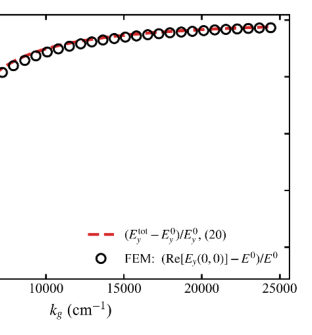
<figcaption class="paper-figure-caption"><b>Fig 2.</b> Figure 2. Normalized perturbation of electric field near the semiconductor surface, caused by diffraction, versus the perturbation wavenumber (the case of strong background medium ionization 𝜔𝑝</figcaption>
</figure>
<figure class="paper-figure-card">
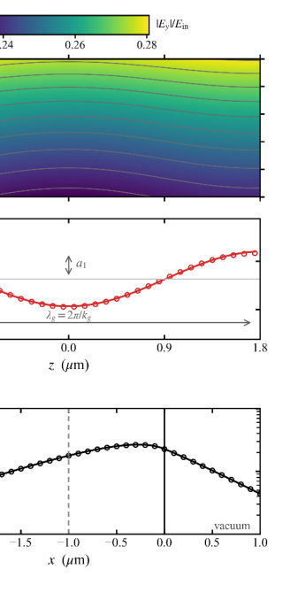
<figcaption class="paper-figure-caption"><b>Fig 3.</b> Figure 3. Electric field near the semiconductor surface, normalized to the incident amplitude 𝐸𝑖𝑛𝑐. The results of numerical modelling for the case of strong medium ionization at 𝑘𝑔= 1.75 × 104 𝑐𝑚−1 are shown. (a) Map of the out-of-plane field component |𝐸𝑦</figcaption>
</figure>
<figure class="paper-figure-card">

<figcaption class="paper-figure-caption"><b>Fig 4.</b> Figure 4. Calculated dependence of the thermal-ionization instability increment Ω (Eq. (46)) on the perturbation wavenumber 𝑘𝑔 for silicon at melting temperature (𝑘𝑇𝑙𝑎𝑡= 0.15 𝑒𝑉, 𝑣𝑑= 1.4 × 107𝑐𝑚/𝑠, 𝜈= 1015𝑠−1, 𝑏= 1.2 𝑀𝑉/𝑐𝑚, α0 = 4 × 105𝑐𝑚−1, 𝑊𝑔= 0.7 𝑒𝑉, 𝐷𝑙𝑎𝑡= 0.1 𝑐𝑚2/𝑠) and for the set of experimental parameters from Ref. [4] (𝜏𝑝= 20 𝑝𝑠, 𝜏𝑑= 37 𝑛𝑠, 𝜔= 5 𝑇𝐻𝑧). Solid, dot-dashed and dashed curves correspond to the incident field amplitudes of 3 MV/cm, 2.5 MV/cm and 2 MV/cm, respectively (which are the estimated amplitudes of micro- pulses with the fluences of 0.3, 0.2 and 0.12 J/cm2 in Ref. [4], respectively).</figcaption>
</figure>
<figure class="paper-figure-card">

<figcaption class="paper-figure-caption"><b>Fig 5.</b> Figure 5. Predicted dependence of LIPSS period on the incident wavelength (Eq. (47)). The set of parameters is the same as in Fig. 4; solid, dot-dashed and dashed curves also correspond to the incident field amplitudes of 3 MV/cm, 2.5 MV/cm and 2 MV/cm, respectively. Squares, stars, and circles are the experimental points for the micro-pulse fluences of 0.3, 0.2 and 0.12 J/cm2 (or estimated field amplitudes of 3 MV/cm, 2.5 MV/cm and 2 MV/cm), respectively [adopted from Fig. 3 (a), Ref. [4]]. Filled symbols denote the center of the irradiated spot; open symbols denote the periphery.</figcaption>
</figure>
</div>

<p><strong>Summary.</strong> This paper presents a comprehensive theory detailing how intense electromagnetic pulses induce deeply subwavelength structuring in semiconductors via a thermal-ionization instability. The core mechanism involves a competition between self-amplifying heating (positive feedback) and field weakening due to diffraction (negative feedback). The resulting model accurately predicts the observed structure periodicity based on material properties and pulse parameters.</p>
<p><strong>Why it may be interesting.</strong> The interplay between nonlinear material response (ionization) and linear wave phenomena (diffraction) in a time-dependent, non-equilibrium setting is highly relevant to open quantum systems and nonlinear optics.</p>
<details>
<summary>Detailed structure</summary>
<p><strong>Main problem.</strong> The paper develops a theory to explain the formation of deeply subwavelength electromagnetic structures in semiconductors when irradiated by intense, low-frequency electromagnetic pulses.</p>
<p><strong>Main result.</strong> The theory successfully models the observed spatial period of these structures by balancing the positive feedback from thermal-ionization heating against the negative feedback from field diffraction.</p>
<p><strong>Method.</strong> The analysis uses a coupled approach, solving the scalar wave equation for the electric field while incorporating rate equations for carrier density and temperature changes.</p>
<p><strong>Model / system.</strong> The system is a semiconductor surface irradiated by intense THz/mid-IR pulses. The physics is governed by the competition between thermal runaway (heating/ionization) and the diffraction of the incident electromagnetic field.</p>
<p><strong>Key observables.</strong> The spatial period (wavelength) of the resulting deeply subwavelength structures (LIPSS).</p>
<p><strong>Important parameters / regimes.</strong> Pump intensity, incident wavelength, pulse repetition rate, thermal conductivity, and carrier dynamics parameters.</p>
<p><strong>Assumptions / limitations.</strong> The analysis relies on approximations such as the deeply subwavelength regime ($k_g \gg k_0\sqrt{|\epsilon|}$) and models carrier dynamics using the Drude response.</p>
<p><strong>Figures summary.</strong> Figure 1 illustrates the physical mechanism, showing yellow loops representing positive feedback (heating) and blue loops representing negative feedback (diffraction/thermal diffusion).</p>
<p><strong>Paper structure.</strong> The paper is structured by analyzing the problem in stages: diffraction on permittivity perturbations, single-pulse heating, slow evolution under many pulses, and the role of surface corrugation.</p>
</details>
<details>
<summary>Abstract</summary>
<p>We develop a theory of ionization-assisted instability that governs the reflection of intense electromagnetic pulses from a semiconductor surface. Local overheating of the material increases the free-carrier density and conductivity, which in turn enhances the absorption of the incident radiation and further amplifies local heating and avalanche ionization. At high pump repetition rates, the overheating accumulates from pulse to pulse, leading to a gradual rise of the local material temperature and free carrier density - a positive feedback loop that drives thermal runaway. However, this effect competes with diffraction of the pump field on the emerging perturbation of the dielectric permittivity or on the surface relief, which reduces the local electric field amplitude in the overheated regions, thus providing negative feedback. We show that the competition between heat diffusion and diffraction near-field weakening creates conditions for the exponential growth of temperature perturbations with a certain wavenumber determined by the pulse repetition rate, pump field, thermal conductivity and other material parameters. The derived analytical expressions accurately describe the spatial period of deeply subwavelength structures observed in recent experiments on silicon structuring by intense terahertz radiation, and reproduce qualitatively dependencies of their period on the pump intensity, the incident wavelength and the number of pump pulses.</p>
</details>
<p><sub><a href="#top">↑ back to top</a></sub></p>

<p><a id="paper-2610.18191"></a></p>
<h3 id="feedback-controlled-self-trapping-of-solitons"><a href="http://arxiv.org/abs/2610.18191v1">Feedback-Controlled Self-Trapping of Solitons</a></h3>
<p><strong>Authors:</strong> Raonaqul Islam, Pradyoth Shandilya, Yunxiang Song, Alioune Niang, Gary Carter, Thomas Carruthers, Curtis Menyuk, Ergun Simsek<br>
<strong>Type:</strong> theory · <strong>Category:</strong> other · <strong>PDF:</strong> <a href="https://arxiv.org/pdf/2610.18191v1">https://arxiv.org/pdf/2610.18191v1</a><br>
<strong>Analysis basis:</strong> full PDF text, analyzed in chunks
<strong>Topic relevance:</strong> <code>driven-dissipative phase transition</code> <strong>3/5</strong> · <code>methods for driven-dissipative</code> <strong>3/5</strong> · <code>quantum measurements</code> <strong>3/5</strong> · <code>Keldysh / 2PI / non-Gaussian methods</code> <strong>1/5</strong> · <code>analog quantum simulation</code> <strong>1/5</strong> · <code>interference shaping light</code> <strong>1/5</strong> · <code>non-equilibrium universality</code> <strong>1/5</strong></p>
<div class="figure-strip-hint">↔ Scroll figures horizontally</div>
<div class="paper-figures-scroll">
<figure class="paper-figure-card">
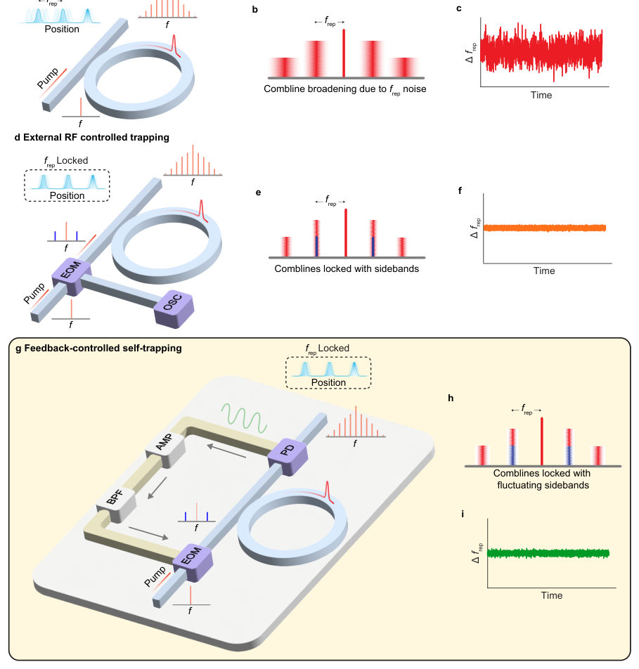
<figcaption class="paper-figure-caption"><b>Fig 1.</b> Figure 1: (a) DKS-microcomb generation using a microresonator pumped by a CW laser. (b) Comb lines of the resulting microcomb are broadened because of fluctuations in frep due to noise (c). (d) DKS is trapped using phase modulation of the pump laser, resulting in reduced broadening of comblines (e) and a lower range of fluctuations in frep (f). (g) Proposed self-trapping scheme, where trapping is achieved using feedback, consequently exhibiting less broadened comblines (h) and a decrease in frep fluctuations (i). BPF: Band pass filter, AMP: RF amplifier, EOM: electro-optics modulator, PD: photodetector, OSC: RF oscillator.</figcaption>
</figure>
<figure class="paper-figure-card">

<figcaption class="paper-figure-caption"><b>Fig 2.</b> Figure 3: Numerical simulation of soliton evolution in the presence of frep noise. When untrapped, the soliton does a random walk in the azimuthal domain (a). By contrast, the soliton does not visibly move when there is either (b) external or (c) feedback-controlled trapping</figcaption>
</figure>
<figure class="paper-figure-card">
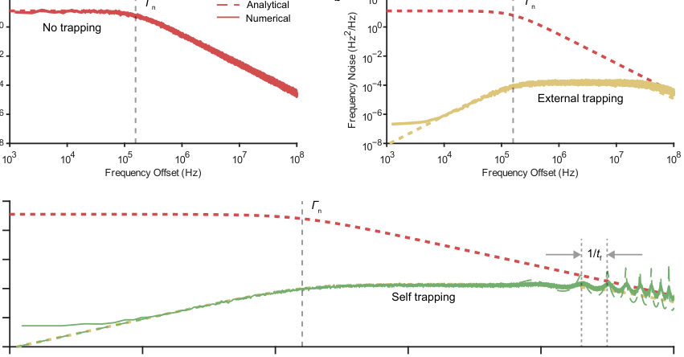
<figcaption class="paper-figure-caption"><b>Fig 3.</b> Figure 4: Theoretically and numerically obtained power spectral density of frep noise for (a) unmodulated pumped system with no trapping, (b) externally trapped soliton system, and (c) the proposed feedback controlled self-trapping scheme.</figcaption>
</figure>
<figure class="paper-figure-card">
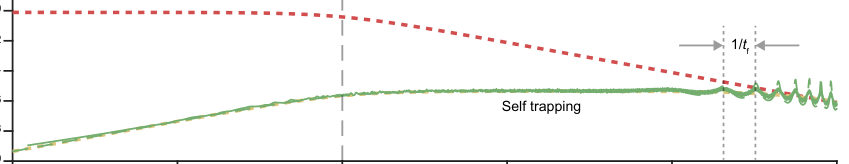
<figcaption class="paper-figure-caption"><b>Fig 4.</b> Figure 5: Theoretical and numerical power spectral density of frep noise for (a) untrapped, (b) externally trapped, and (c) self-trapped systems when the noise source is only TRN instrinsic in the microresonator.</figcaption>
</figure>
</div>

<p><strong>Summary.</strong> This paper introduces an optoelectronic self-trapping technique to stabilize frequency combs generated in chip-scale microresonators. By using feedback derived from the comb output itself, it eliminates the need for bulky external low-noise RF sources. The method achieves noise suppression comparable to conventional techniques, making high-stability comb generation viable for fully integrated photonic platforms.</p>
<p><strong>Why it may be interesting.</strong> This work directly addresses noise control in integrated photonics, which is crucial for realizing stable quantum light sources or high-precision quantum sensors, linking nonlinear optics to noise suppression techniques.</p>
<details>
<summary>Detailed structure</summary>
<p><strong>Main problem.</strong> The primary challenge is suppressing intrinsic microresonator noise that degrades the repetition-rate stability of chip-scale frequency combs.</p>
<p><strong>Main result.</strong> The proposed feedback-controlled self-trapping scheme successfully suppresses repetition-rate noise to levels comparable with external referencing, while remaining fully integrated on a chip.</p>
<p><strong>Method.</strong> The authors developed and analyzed both analytical and numerical models based on the Lugiato–Lefever equation and its linearized form to track soliton dynamics and noise propagation.</p>
<p><strong>Model / system.</strong> The system involves chip-scale microresonators generating frequency combs via Dissipative Kerr Solitons (DKSs). The dynamics are modeled using the Lugiato–Lefever equation, and stability is analyzed via linearization around the steady-state solution.</p>
<p><strong>Key observables.</strong> Repetition-rate ($ ext{frep}$) stability, noise Power Spectral Density (PSD) of frequency noise, and the evolution of soliton perturbations (eigenvalues).</p>
<p><strong>Important parameters / regimes.</strong> The performance limit is set by the intrinsic pump-laser noise, and the system is analyzed for 100-GHz-FSR Si3N4 microring resonators.</p>
<p><strong>Assumptions / limitations.</strong> The analysis assumes the self-trapping potential remains sufficient despite inheriting fluctuations correlated with the microcomb jitter, and it models the system using the LLE framework.</p>
<p><strong>Figures summary.</strong> Figures compare the noise PSDs for three cases: untrapped, externally trapped, and the proposed self-trapped system, demonstrating noise suppression in the latter two relative to the former.</p>
<p><strong>Paper structure.</strong> The paper progresses from identifying the noise limitation in microcombs to proposing the self-trapping scheme. It develops the necessary mathematical models (LLE, linearization) and then rigorously compares the noise suppression achieved by the novel self-trapping method against conventional external referencing.</p>
</details>
<details>
<summary>Abstract</summary>
<p>Chip-scale microresonator-based frequency combs, commonly referred to as microcombs, are promising sources for field-deployable metrology applications. However, intrinsic microresonator noise can make it difficult to generate microcombs with sufficiently low noise for applications. A widely used approach to overcome this limitation is to trap the DKS in the microresonator by phase-modulating the pump laser, although integrating a low-noise modulation reference in a fully on-chip platform remains challenging. Here, we propose an optoelectronic self-trapping scheme in which the impact of intrinsic microresonator noise on microcomb repetition-rate jitter is suppressed through feedback-controlled phase modulation of the driving laser so that the intrinsic noise of the laser sets the ultimate performance limit. This modification eliminates the need for an external low-phase-noise RF source, thereby enabling chip integration. We develop both analytical and numerical models for the proposed system and benchmark its performance against conventional externally referenced bulk implementations, showing that the proposed approach achieves comparable microcomb noise suppression while maintaining chip-scale compatibility.</p>
</details>
<p><sub><a href="#top">↑ back to top</a></sub></p>

<p><a id="paper-2610.18418"></a></p>
<h3 id="the-role-of-dependency-range-in-thermally-coupled-superconducting-networks"><a href="http://arxiv.org/abs/2610.18418v1">The role of dependency range in thermally coupled superconducting networks</a></h3>
<p><strong>Authors:</strong> Nahala Yadid, Bnaya Gross, Shlomo Havlin, Nadav M. Shnerb<br>
<strong>Type:</strong> theory · <strong>Category:</strong> statistical mechanics · <strong>PDF:</strong> <a href="https://arxiv.org/pdf/2610.18418v1">https://arxiv.org/pdf/2610.18418v1</a><br>
<strong>Analysis basis:</strong> full PDF text, analyzed in chunks
<strong>Topic relevance:</strong> <code>driven-dissipative phase transition</code> <strong>3/5</strong> · <code>non-equilibrium universality</code> <strong>3/5</strong> · <code>correlated / nonlocal dissipation</code> <strong>1/5</strong> · <code>methods for driven-dissipative</code> <strong>1/5</strong></p>
<div class="figure-strip-hint">↔ Scroll figures horizontally</div>
<div class="paper-figures-scroll">
<figure class="paper-figure-card">

<figcaption class="paper-figure-caption"><b>Fig 1.</b> FIG. 1: A spatial network of amorphous superconducting segments. Current IT flows from left to right through the network. Each segment (i, j) of the 2d lattice represents a link (Resistively Shunted Josephson Junction, RSJJ), characterized by its own critical current value, Ic i,j(T). As temperature varies, a few segments may change their state from superconducting to normal and vice versa. Zigzag lines denote resistive (normal) segments that generate heat, which subsequently diffuses with diffusion constant D. The radius r = √</figcaption>
</figure>
<figure class="paper-figure-card">

<figcaption class="paper-figure-caption"><b>Fig 2.</b> FIG. 2: Dependence of the superconducting transition on interaction range. (a) Resistance R(Ω) vs temperature T through the cooling process. The total resistance of the network is high at elevated temperatures, when all segments are normal. As the temperature decreases, some segments transition to the superconducting state, drawing current away from their neighbors and decreasing their temperature, thus increasing the likelihood that those segments will also enter the SC state. As the process progresses, more segments transition to the superconducting state, until eventually the total resistance drops to zero. The range of dependencies in the system is governed primarily by thermal...</figcaption>
</figure>
<figure class="paper-figure-card">
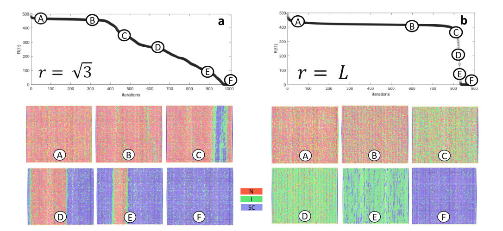
<figcaption class="paper-figure-caption"><b>Fig 3.</b> FIG. 3: Spontaneous cascading dynamics of the collapse at the critical temperature. The global resistance of a square network (L = 100) is plotted against simulation “time” (number of iterations), during the abrupt collapse, after cooling from the conducting state at T = 3K to the critical temperature. Panels (a) and (b) correspond to two of the dependency ranges considered in Fig. 2. Snapshots of the system are shown at the points (A–F) marked along each resistance curve. When the dependency length is intermediate (panel (a), r = √</figcaption>
</figure>
<figure class="paper-figure-card">

<figcaption class="paper-figure-caption"><b>Fig 4.</b> Fig. 3 indicates that, at least for the system consid-</figcaption>
</figure>
<figure class="paper-figure-card">

<figcaption class="paper-figure-caption"><b>Fig 5.</b> FIG. 4: Resistance vs. temperature through heating, for r = 0 (full circles), r = 1 (open circles), and very long range r = 100 (crosses). The three curves in the main panel are single representative realizations, one per r; the small step-like features they show are finite-size effects of individ- ual realizations. Averaging over many realizations, together with the other transition criteria and finite-size analysis, is presented in the inset and in the Supplementary Information. The network was initiated in its superconducting state (low T), and starts showing finite resistance when the giant com- ponent of SC links collapses. Interestingly, the network with long-range dependency is more...</figcaption>
</figure>
</div>

<p><strong>Summary.</strong> This work analyzes superconducting networks where coupling strength is determined by physical heat diffusion rather than abstract geometry. The authors demonstrate that this physical mechanism allows long-range thermal coupling to stabilize the superconducting state upon heating, contradicting predictions from simpler geometric models. The findings offer an experimentally testable framework for understanding phase transitions in real, interacting materials.</p>
<p><strong>Why it may be interesting.</strong> The study provides a physically motivated alternative to abstract network models, showing how thermal physics dictates phase transitions in superconducting systems, which has implications for understanding non-equilibrium critical phenomena in condensed matter.</p>
<details>
<summary>Detailed structure</summary>
<p><strong>Main problem.</strong> The study investigates how the physical mechanism of heat-mediated dependency, which varies with distance, affects the stability and transition dynamics of superconducting networks compared to idealized geometric models.</p>
<p><strong>Main result.</strong> Unlike geometric models, long-range thermal coupling can stabilize the superconducting phase upon heating, and the critical temperature exhibits a non-monotonic dependence on the dependency range.</p>
<p><strong>Method.</strong> The authors use an experimentally calibrated model of resistively shunted Josephson junctions (RSJJs) on a lattice, simulating heat diffusion and current redistribution to track phase transitions.</p>
<p><strong>Model / system.</strong> The system is a thermally coupled amorphous superconducting network modeled by RSJJs on a 2D lattice. Interdependence arises physically from current redistribution and heat-mediated interactions governed by thermal diffusivity.</p>
<p><strong>Key observables.</strong> Superconducting transition temperature (Tc), transition regimes (continuous, nucleation-dominated, mixed-order), and the dependence of Tc on the dependency range (r).</p>
<p><strong>Important parameters / regimes.</strong> Thermal diffusivity (D), dependency range (r = sqrt(Dt)), applied current (I), and system size (L).</p>
<p><strong>Assumptions / limitations.</strong> The analysis assumes the physical connectivity links are reversible (failure and recovery can both propagate) and that the system can be modeled by RSJJs.</p>
<p><strong>Figures summary.</strong> Figures illustrate heat diffusion profiles, the dependence of Tc on interaction range (r), and the evolution of transition behavior across different r regimes, showing stabilization effects.</p>
<p><strong>Paper structure.</strong> The paper progresses by establishing the physical model, comparing its transition dynamics to canonical geometric models, and detailing how the range-dependent heat diffusion leads to unique stabilization and anisotropic cascading behaviors.</p>
</details>
<details>
<summary>Abstract</summary>
<p>Interdependent networks can be highly fragile because dependency links amplify local failures into cascades that trigger global collapse. Much of the theoretical understanding comes from geometric network models, where dependency range is imposed externally and coupling strength is distance independent, and it is unclear how these insights apply to real materials, where interdependence arises from physical transport. Here we study thermally coupled amorphous superconducting networks, in which dependencies emerge from current redistribution and heat-mediated interactions governed by thermal diffusivity. Using an experimentally calibrated model of resistively shunted Josephson junctions, we show the system reproduces the three canonical transition regimes: continuous, nucleation-dominated, and mixed-order. However, because heat-driven dependency simultaneously broadens and weakens with distance, long-range thermal coupling can stabilize the superconducting phase upon heating, in contrast with its destabilizing role in geometric models. Cascades are anisotropic, with one-dimensional front propagation. These results offer an experimentally testable perspective complementing the geometric framework.</p>
</details>
<p><sub><a href="#top">↑ back to top</a></sub></p>

<p><a id="paper-2610.18297"></a></p>
<h3 id="a-topological-spin-on-racetrack-memory"><a href="http://arxiv.org/abs/2610.18297v1">A Topological Spin on Racetrack Memory</a></h3>
<p><strong>Authors:</strong> Benjamin Zingsem<br>
<strong>Type:</strong> theory · <strong>Category:</strong> other · <strong>PDF:</strong> <a href="https://arxiv.org/pdf/2610.18297v1">https://arxiv.org/pdf/2610.18297v1</a><br>
<strong>Analysis basis:</strong> full PDF text, analyzed in chunks
<strong>Topic relevance:</strong> <code>Keldysh / 2PI / non-Gaussian methods</code> <strong>2/5</strong> · <code>analog quantum simulation</code> <strong>2/5</strong> · <code>driven-dissipative phase transition</code> <strong>2/5</strong> · <code>methods for driven-dissipative</code> <strong>2/5</strong> · <code>non-equilibrium universality</code> <strong>2/5</strong> · <code>Frenkel-Kontorova</code> <strong>1/5</strong> · <code>quantum measurements</code> <strong>1/5</strong> · <code>scars &amp; prethermalization</code> <strong>1/5</strong></p>
<div class="figure-strip-hint">↔ Scroll figures horizontally</div>
<div class="paper-figures-scroll">
<figure class="paper-figure-card">

<figcaption class="paper-figure-caption"><b>Fig 1.</b> Figure 1: A bound 360° domain wall in a hollow magnetic tube. a, Same-handed 360° domain wall (DW): two successive 180° reversals return to the same axial background. The local unit vectors es, eϕ and er point along the tube, around its circumference and outward; ms, mϕ, mr are the corresponding unit-spin components. Hue follows the displayed tangent-angle wheel. The transparent support is thick- ened for visibility; the reference magnetic shell is 4 nm thick. b, Azimuthal means of the saved relaxed mid-shell components, all on the full [−1, 1] scale. c, Directions traced by the magnetization while moving along an axial line at fixed ϕ: projected winding W = (2π)−1 H d[arg(ms + imϕ)] is one...</figcaption>
</figure>
<figure class="paper-figure-card">

<figcaption class="paper-figure-caption"><b>Fig 2.</b> Figure 2: Relative spin rotation contributes to translation. a, Schematic constituent spins at fixed ϕ. Gray arrows show reference core directions; blue and orange arrows show changed spins in the (mϕ, mr) plane. Common and opposite helicity changes are rotations relative to the local frame, not rigid rotation of the whole axisymmetric field. b, Measured periodic-pair displacement at Js = 1012</figcaption>
</figure>
<figure class="paper-figure-card">

<figcaption class="paper-figure-caption"><b>Fig 3.</b> Figure 3: A prepared information pattern moves forward, recovers and reverses. a, Actual initial magnetization of four 360° DWs encoding 11001012 = 10110 in seven data slots, with an eighth empty guard slot between periodic copies. The track has no physical end faces at the displayed limits. Spin hue follows Fig. 1. Labels identify the four 360° walls occupying the ‘1’ slots. The nominal pitch is 384 nm. b, Applied conventional-current protocol: −4 × 1012 A/m2 for 2 ns, zero current for 0.8 ns, then +4 × 1012 A/m2 for 1 ns. The reverse phase starts from the exact recovered checkpoint, without relaxation or minimization. c, Independently tracked, unwrapped displacements of all four textures....</figcaption>
</figure>
<figure class="paper-figure-card">

<figcaption class="paper-figure-caption"><b>Fig 4.</b> Figure 4: The simulated carrier provides local magnetic and resistive contrast. a, Schematic axial view of the two constituent walls and an external detector. The surface gap is h; the footprint is 40 × 40 nm in a plane parallel to the tube axis. b, Our calculated footprint-averaged axial stray-field contrast ∆Bs from the stationary single-pair 4 nm reference, relative to its no-bit background. The peak magnitudes are 12.03, 5.83 and 1.85 mT at the stated gaps. Blue and orange vertical lines mark the two measured constituent centers, aligned with panel a. The field is reconstructed from the saved micromagnetic magnetization, not an analytical trial wall; the source quadrature and validation...</figcaption>
</figure>
<figure class="paper-figure-card">

<figcaption class="paper-figure-caption"><b>Fig 5.</b> Figure 5: A restoring bound branch with a localized radial escape coordinate. a, RMS spin-angle difference from one unperturbed relaxed reference, before (open symbols) and after (filled symbols) free relaxation. Both signs of five small distortions are tested: radial tilt, core-spin rotation, circumferen- tial variation, through-thickness variation and combined distortion. The maximum imposed spin-vector change is approximately 0.01 (ϵ = ±0.01). Angles are measured over all occupied cells after remov- ing only common axial translation. Initial differences of 0.092°–0.264° decrease to 0.014°–0.024°. The residual distortions remain resolved. These are ten deterministic returns, not a...</figcaption>
</figure>
</div>

<p><strong>Summary.</strong> This work proposes a novel magnetic memory bit based on a topologically stabilized $360^\circ$ domain wall confined in a hollow tube. Using micromagnetic simulations, the authors demonstrate that the wall maintains stability and supports ultra-fast, controllable motion without relying on external fields or chiral interactions. This establishes a physical pathway for high-density, fast magnetic data storage.</p>
<p><strong>Why it may be interesting.</strong> While focused on spintronics, the detailed modeling of emergent topological stability and controlled dynamics using continuum equations (LLG) shares mathematical formalism with the study of non-equilibrium dynamics in quantum many-body systems.</p>
<details>
<summary>Detailed structure</summary>
<p><strong>Main problem.</strong> The paper addresses the need for a magnetic memory carrier that combines rapid motion, robustness against perturbations, and a clear readout signal, overcoming limitations of existing domain wall and skyrmion concepts.</p>
<p><strong>Main result.</strong> A $360^\circ$ domain wall confined in a hollow ferromagnetic tube was shown to be stable, support high-speed motion (up to $1 	ext{ km/s}$ transiently), and retain stored information patterns.</p>
<p><strong>Method.</strong> The study employs analytical energetics and micromagnetic simulations solving the Landau–Lifshitz–Gilbert equation with spin-transfer torque.</p>
<p><strong>Model / system.</strong> The physical system is a $360^\circ$ domain wall within a hollow ferromagnetic tube. The model uses the LLG equation with STT, incorporating topological winding ($W$) as a stabilizing feature, and explicitly excludes external fields or Dzyaloshinskii–Moriya interaction.</p>
<p><strong>Key observables.</strong> Winding number ($W$), topological charge ($Q$), carrier velocity (up to $1 	ext{ km/s}$), and retained information patterns (seven-bit pattern).</p>
<p><strong>Important parameters / regimes.</strong> Current density ($J_s$), exchange stiffness ($A$), and the energy cost associated with radial spin rotation.</p>
<p><strong>Assumptions / limitations.</strong> The analysis omits thermal noise and assumes fixed material parameters; stability is governed by geometric and topological constraints rather than external fields.</p>
<p><strong>Figures summary.</strong> Figures illustrate the magnetic texture of the $360^\circ$ DW, the dependence of energy on separation, and the quantitative contribution of relative spin rotation to the total displacement during current-driven transport.</p>
<p><strong>Paper structure.</strong> The paper develops by first establishing the topological nature of the $360^\circ$ DW, then analyzing its dynamics using the LLG equation with STT to quantify the role of internal spin rotation, and finally demonstrating pattern retention under pulsed transport.</p>
</details>
<details>
<summary>Abstract</summary>
<p>Magnetic racetrack memory requires localized carriers that combine rapid motion, resistance to perturbations and a detectable signal. Here we show how a 360° domain wall in a hollow ferromagnetic tube combines these properties within a single continuous magnetic shell. Two successive magnetization reversals form a bound object whose surrounding domains point in the same direction. Analytical energetics and micromagnetic simulations establish its finite separation, recovery from tested perturbations and current driven transport without microscopic Dzyaloshinskii-Moriya interaction or a maintaining field. The texture's winding resists unwinding while radial rotation carries an energy cost, providing a specific control over stability. Relative rotation of the constituent spins accounts quantitatively for additional displacement during current onset. The wall supports motion at hundreds of metres per second, with transient velocities approaching one kilometre per second at stronger drive. A prepared seven-bit pattern retains its carriers and local readout contrast after pulsed transport and recovery. Curved-track and differential-current tests identify radial stiffness and drive uniformity as controls for intact motion. These results establish a physical basis for fast, locally distinguishable tubular magnetic bits and identify a continuous switching pathway that can be targeted by tailored excitation.</p>
</details>
<p><sub><a href="#top">↑ back to top</a></sub></p>

<p><a id="paper-2610.18800"></a></p>
<h3 id="spin-textures-at-the-fermi-surface-of-ferromagnets-and-associated-torque"><a href="http://arxiv.org/abs/2610.18800v1">Spin textures at the Fermi surface of ferromagnets and associated torque</a></h3>
<p><strong>Authors:</strong> T. Valet, J. Li, H. Jaffrès, V. Cros, M. Chshiev, R. Raimondi<br>
<strong>Type:</strong> both · <strong>Category:</strong> other · <strong>PDF:</strong> <a href="https://arxiv.org/pdf/2610.18800v1">https://arxiv.org/pdf/2610.18800v1</a><br>
<strong>Analysis basis:</strong> full PDF text, analyzed in chunks
<strong>Topic relevance:</strong> <code>Keldysh / 2PI / non-Gaussian methods</code> <strong>2/5</strong> · <code>analog quantum simulation</code> <strong>1/5</strong> · <code>methods for driven-dissipative</code> <strong>1/5</strong> · <code>non-equilibrium universality</code> <strong>1/5</strong> · <code>quantum measurements</code> <strong>1/5</strong></p>
<div class="figure-strip-hint">↔ Scroll figures horizontally</div>
<div class="paper-figures-scroll">
<figure class="paper-figure-card">
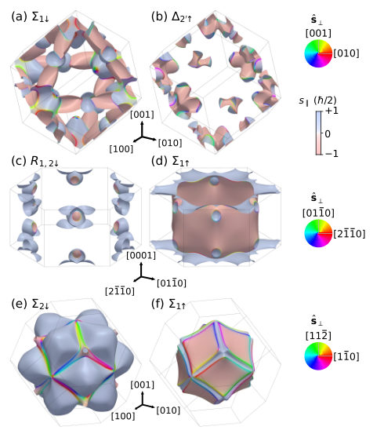
<figcaption class="paper-figure-caption"><b>Fig 1.</b> FIG. 1. Spin mosaics of Fe, Co and Ni. We show here pairs of Fermi surfaces, which intersect in the absence of SOI, and carry the strongest transverse spin texture: in bcc Fe with the magnetization direction m along [100] i.e., (a) Σ1↓and (b) ∆2′↑; in hcp Co with m along [0001] i.e., (c) R1,2↓and (d) Σ1↑; in fcc Ni with m along [111] i.e., (e) Σ2↓and (f) Σ1↑. Each surface is named after its dominant “parent” band before reconnection, in the notation of Ref. [33] for Fe and Ni and of Ref. [34] for Co, and is drawn inside the first Brillouin zone. The red tint, on the majority tiles, and blue tint, on the minority ones, give the spin polarization along m. It fades to white at the seams, where...</figcaption>
</figure>
<figure class="paper-figure-card">
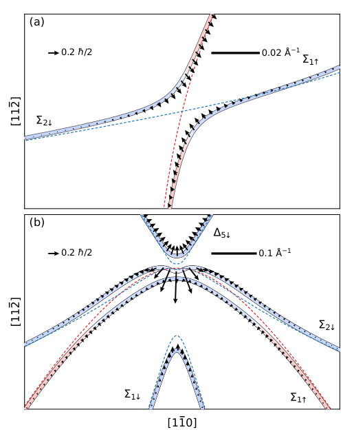
<figcaption class="paper-figure-caption"><b>Fig 2.</b> FIG. 2. Reconnection of the Fermi surfaces and transverse spin texture of fcc Ni, in two cut-planes perpendicular to m ∥ [111]: (a) the plane through Γ, at an isolated crossing, the panel centered at the wave vector (−0.54, 0.98, −0.43) ˚A−1; (b) the plane at −0.80 ˚A−1 from Γ along m, through the point of largest transverse spin polarization in Ni, the panel cen- tered at (−0.04, −0.06, −1.29) ˚A−1. Dashed lines: the Fermi lines without SOI, majority in red and minority in blue. Full lines: the Fermi lines with SOI, with the tint of Fig. 1 for the spin polarization along m. Arrows: the transverse spin polarization.</figcaption>
</figure>
<figure class="paper-figure-card">
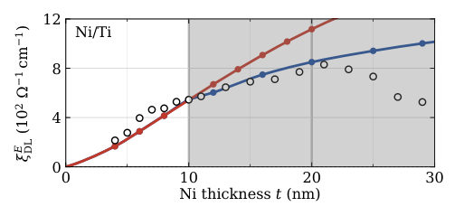
<figcaption class="paper-figure-caption"><b>Fig 3.</b> FIG. 4. Ni layer thickness dependence of the damping-like torque efficiency, for a series of Ni(t)/Ti(8 nm) bilayers mea- sured in Ref. [16] (open circles, data extracted from Fig. 2d therein), and computed from our model of intraband current- gradient-induced torque (red and blue dots at the computed thicknesses, with the continuous lines as guides to the eye).</figcaption>
</figure>
<figure class="paper-figure-card">

<figcaption class="paper-figure-caption"><b>Fig 4.</b> FIG. 3. Current density and effective field, in a 160 nm thick (111) fcc Ni film with m and E along [1¯10], for an average current density of 1012 A/m2. Red lines: p = 0 at bottom and top. Blue lines: p = 0 at bottom and p = 0.5 at top. (a) Current density profiles; and, for the asymmetric film, insets with the deviation ϕΣ1↑on the Σ1↑Fermi surface, at 1 nm from the bottom, at the center and at 1 nm from the top (black dots). The triad of crystal axes defines the viewpoint. (b) The effective field components, damping-like, HDL along [111], and field-like, HFL(×5) along [11¯2].</figcaption>
</figure>
</div>

<p><strong>Summary.</strong> This work theoretically predicts that spin-orbit interaction induces transverse spin textures on the Fermi surface of ferromagnetic metals. These textures give rise to a novel current-gradient-induced spin-orbit torque, which the authors demonstrate quantitatively matches experimental measurements in Ni bilayers. This suggests a new mechanism for electrically controlling magnetic properties beyond traditional orbital torque explanations.</p>
<p><strong>Why it may be interesting.</strong> While focused on condensed matter magnetism, the derivation of novel, symmetry-protected torques and the use of quantum kinetic theory to link electronic structure (Fermi surface topology) to macroscopic transport phenomena are relevant to understanding non-equilibrium quantum dynamics.</p>
<details>
<summary>Detailed structure</summary>
<p><strong>Main problem.</strong> The paper theoretically establishes the existence of transverse spin textures at the Fermi surface of centrosymmetric ferromagnets and predicts a novel current-gradient-induced spin-orbit torque (SOT) associated with these textures.</p>
<p><strong>Main result.</strong> The predicted current-gradient-induced SOT quantitatively accounts for measurements previously attributed to orbital torques in Ni-based bilayers, opening a new avenue for electrical control of magnetic order.</p>
<p><strong>Method.</strong> The study combines analytic derivations using a two-band approximation with ab initio computations (VASP) to calculate spin polarization and torque components.</p>
<p><strong>Model / system.</strong> The system involves centrosymmetric ferromagnetic metals (Fe, Co, Ni) analyzed via their spin-orbit interaction (SOI) effects on the Fermi surface, modeled using quantum kinetic theory and a two-band approach.</p>
<p><strong>Key observables.</strong> Transverse spin texture ($s^\perp$), current-gradient-induced torque ($  au^E_{ib}$), and the thickness dependence of the damping-like torque efficiency ($\xi_{E}^{DL}$).</p>
<p><strong>Important parameters / regimes.</strong> Fermi level crossing points, SOI strength (gaps of 20–60 meV), and film thickness ($t$).</p>
<p><strong>Assumptions / limitations.</strong> The analysis relies on a two-band approximation and assumes the top interface acts as a diffusive bottom boundary when solving the Boltzmann equation.</p>
<p><strong>Figures summary.</strong> Figures illustrate the spin mosaics and resulting transverse spin textures on the Fermi surfaces (Fig. 1, 2), and show the current density profiles and thickness dependence of the torque components in Ni films (Fig. 3, 4).</p>
<p><strong>Paper structure.</strong> The paper progresses from establishing the theoretical origin of transverse spin textures via SOI to deriving the current-gradient-induced torque, and finally validating this torque by comparing theoretical predictions with experimental measurements on Ni-based bilayers.</p>
</details>
<details>
<summary>Abstract</summary>
<p>We establish theoretically that transverse spin textures are generically induced by the spin-orbit interaction at the Fermi surface of centrosymmetric ferromagnetic metals. We confirm this prediction with {\em ab initio} computations for Fe, Co and Ni. By symmetry, this cannot be associated with spin-orbit torques under a uniform current. However, a new {\em current-gradient-induced} torque emerges in nanoscale geometries. For a series of Ni-based bilayers, the computed Ni thickness dependence of the current-gradient-induced torque is in quantitative agreement with measurements previously attributed to orbital torques. We discuss how this opens a new avenue for the electrical control of magnetic orders, possibly also including the Néel vector of metallic altermagnets.</p>
</details>
<p><sub><a href="#top">↑ back to top</a></sub></p>

<p><a id="paper-2610.18817"></a></p>
<h3 id="single-anyons-and-anyon-binding-in-a-quantum-hall-dot"><a href="http://arxiv.org/abs/2610.18817v1">Single anyons and anyon binding in a quantum Hall dot</a></h3>
<p><strong>Authors:</strong> Marco Valentini, Will Wang, Amir Shapour Mohammadi, Noah Samuelson, Chengxuan Li, Liam Cohen, Mark Zakharyan, Jiechao Feng, Taige Wang, Takashi Taniguchi, Kenji Watanabe, Michael P. Zaletel, Andrea F. Young<br>
<strong>Type:</strong> experiment · <strong>Category:</strong> strongly correlated electrons · <strong>PDF:</strong> <a href="https://arxiv.org/pdf/2610.18817v1">https://arxiv.org/pdf/2610.18817v1</a><br>
<strong>Analysis basis:</strong> full PDF text, analyzed in chunks
<strong>Topic relevance:</strong> <code>analog quantum simulation</code> <strong>2/5</strong> · <code>Full counting statistics</code> <strong>1/5</strong> · <code>quantum measurements</code> <strong>1/5</strong></p>
<div class="figure-strip-hint">↔ Scroll figures horizontally</div>
<div class="paper-figures-scroll">
<figure class="paper-figure-card">

<figcaption class="paper-figure-caption"><b>Fig 1.</b> FIG. 1. Integer and fractional quantum Hall quantum dot. a, Device schematic. A monolayer graphene layer is encapsulated between hexagonal boron nitride dielectrics (not shown) and controlled by 7 field-effect gates in three vertical layers. A graphite bottom gate (at voltage VB) tunes the entire device. A top graphite gate (VT) is patterned using atomic force lithography[17] to form a QPC geometry consisting of a central top gate perforated by a hole of 90 nm diameter as well as north and south QPC control gates (Vqpc,N and Vqpc,S) (see atomic force micrograph, inset). Three aluminum finger gates are aligned over the hole (Vdot) and trenches (Vedge,N and Vedge,S) close to the dot....</figcaption>
</figure>
<figure class="paper-figure-card">
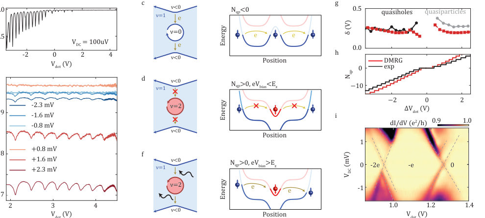
<figcaption class="paper-figure-caption"><b>Fig 2.</b> FIG. 2. Single quasihole-quasiparticle control in the integer regime. a, I/V as a function of VDC and Vdot under the same conditions as in Fig. 1g, but with Vedge = −3.5 V. b, Low-bias data acquired under the same conditions as in a. c, Schematic of the dot embedded in the QPC for Nqp &lt; 0 and d, Nqp &gt; 0. The left panels show a real-space diagram while the right panels show the energy as a function of y-coordinate across the QPC neck. Edge-to-dot tunneling is allowed for Nqp &lt; 0 but spin-blockaded for Nqp &gt; 0. e, High-bias data acquired under the same conditions as panel a for Nqp &gt; 0. f, Schematic of the dot embedded in the QPC for Nqp &gt; 0 and applied bias exceeding the Zeeman energy....</figcaption>
</figure>
<figure class="paper-figure-card">

<figcaption class="paper-figure-caption"><b>Fig 3.</b> FIG. 3. Single anyon dot. a, dI/dV as a function of VDC and Vdot, measured at νbulk = 1/3. b, I/V with VDC = 100µV. The bracket indicates the span of the Nqp = 0 diamond for ν = 1 at B = 4.5 T. The range shows the expected position of the Nqp = 0; the range represents an error bar derived from our calibration of quantum capacitance effects. c, Schematic of backscattering via fractional Coulomb blockade of the dot. d, Detail of the conductance for low Nqp &gt; 0, with the charge sectors indicated. e, High-resolution I/V in the few quasiparticle regime. f, Spacing δ in the few-quasiparticle regime, measured experimentally (black) and calculated using DMRG (orange). g, Local filling-factor...</figcaption>
</figure>
<figure class="paper-figure-card">

<figcaption class="paper-figure-caption"><b>Fig 4.</b> FIG. 4. Evidence for anyon attraction. Upper panels of a–d, dI/dV as a function of VDC and Vdot for dot filling factors νdot = 1/3 (a, c) and νdot = 2/3 (b, d). Panels a and d correspond to the quasihole regime, whereas b and c correspond to the quasiparticle regime. The lower panels show linecuts taken at VDC = 0 of the corresponding upper panels (black traces) and the relative δ spacings (blue trace). Panels a and b exhibit regularly spaced Coulomb diamonds and resonances, whereas c and d exhibit irregular spacings and an alternation between small and large diamonds, indicative of an even–odd effect. e, Left panel, Zoomed-in view of the even–odd effect in the ν = 1/3 quasiparticle regime...</figcaption>
</figure>
</div>

<p><strong>Summary.</strong> This work reports on the experimental realization and characterization of a single anyon quantum dot using a graphene-based quantum Hall structure. By measuring the charge addition spectrum, the researchers observed signatures of an attractive inter-anyon interaction, leading to the quantitative evidence of an anyon binding energy. This advances the field by moving from ensemble measurements to single-particle characterization of fractional excitations.</p>
<p><strong>Why it may be interesting.</strong> The direct experimental observation of anyon binding energy in a solid-state platform provides crucial empirical data for theoretical models of fractional quantum Hall states and topological matter.</p>
<details>
<summary>Detailed structure</summary>
<p><strong>Main problem.</strong> The research aims to experimentally demonstrate the trapping of a single anyon and characterize the associated anyon binding energy in a controlled quantum Hall dot setup.</p>
<p><strong>Main result.</strong> The authors observed highly irregular charge addition energies at low quasiparticle numbers, which transitioned to a regular pattern indicating an anyon binding energy comparable to the charging energy.</p>
<p><strong>Method.</strong> The study uses charge spectroscopy by measuring the addition energy spectrum of quasiparticles/quasiholes across a graphene-based quantum point contact coupled to a tunable quantum Hall dot.</p>
<p><strong>Model / system.</strong> The physical system is a graphene-based quantum point contact coupled to a tunable quantum Hall dot, allowing the study of fractional excitations (anyons) in a topologically ordered insulator.</p>
<p><strong>Key observables.</strong> Charge addition spectrum, conductance plateaus at fractional fillings (e.g., 1/3, 2/3), and the spacing ($\delta$) of Coulomb blockade resonances.</p>
<p><strong>Important parameters / regimes.</strong> Fractional filling factors ($
u=1/3, 2/3$), charging energy ($E_C$), and the ratio of inter-anyon interaction to charging energy.</p>
<p><strong>Assumptions / limitations.</strong> The system is modeled as containing a single localized anyon, and the analysis relies on interpreting conductance dips as single-anyon tunneling events.</p>
<p><strong>Figures summary.</strong> Figures detail device schematics, quantized conductance plateaus at integer and fractional fillings, and plots showing the spacing of Coulomb resonances ($\delta$) as a function of gate voltages.</p>
<p><strong>Paper structure.</strong> The paper progresses from demonstrating basic fractional charge transport ($
u=1/3$) to observing complex, non-monotonic addition energy spectra, culminating in the identification of an energy scale suggesting anyon binding.</p>
</details>
<details>
<summary>Abstract</summary>
<p>Anyons are particles with quantized fractional statistics. In theory, a single anyon can be stabilized as a localized fractional charge within the bulk of a topologically ordered two-dimensional insulator. However, experiments to date have focused on probing anyons in structures in which many anyonic excitations coexist and interact. Here, we demonstrate the trapping of a single anyon in a device consisting of a graphene-based quantum point contact with an embedded tunable quantum Hall dot. Benchmarking our device at v = 1, we demonstrate backscattering between Fermi liquid edge states mediated by the whole-electron Coulomb blockade of the dot. The cleanliness and control available in our device allow depletion of the dot to the last quasihole, and we observe spin blockade for transitions to the opposite-spin Landau level. At v = 1/3 and 2/3, we observe backscattering resonances with three times the frequency, consistent with resonant transmission of e/3 charges via a single anyon transistor. We demonstrate controlled depletion to the last quasiparticle to form a single anyon quantum dot. Tracing the charge addition spectrum for quasiparticle number Nqp = 1-5, we observe highly irregular addition energies, consistent with DMRG modeling showing a complex orbital shell-filling behavior. At higher Nqp = 10-20, the addition energies show a striking pattern: quasiholes at 1/3 (and quasiparticles at 2/3) show a regular addition spectrum while quasiparticles at 1/3 (and quasiholes at 2/3) do not. We trace the origin of this irregularity to an attractive component of the inter-anyon interaction: by experimentally tuning the confining energy, we observe complete suppression of alternating charge sectors, after which the dot charges in increments of twice the fundamental charge. This observation indicates the emergence of an anyon binding energy as large as the charging energy.</p>
</details>
<p><sub><a href="#top">↑ back to top</a></sub></p>

<p><a id="paper-2610.18224"></a></p>
<h3 id="zeeman-spin-quantum-geometry-and-intrinsic-gyrotropic-spin-current"><a href="http://arxiv.org/abs/2610.18224v1">Zeeman spin quantum geometry and intrinsic gyrotropic spin current</a></h3>
<p><strong>Authors:</strong> Srijan Chatterjee, Tarun Kanti Ghosh<br>
<strong>Type:</strong> theory · <strong>Category:</strong> other · <strong>PDF:</strong> <a href="https://arxiv.org/pdf/2610.18224v1">https://arxiv.org/pdf/2610.18224v1</a><br>
<strong>Analysis basis:</strong> full PDF text, analyzed in chunks
<strong>Topic relevance:</strong> <code>Keldysh / 2PI / non-Gaussian methods</code> <strong>2/5</strong> · <code>methods for driven-dissipative</code> <strong>2/5</strong></p>
<div class="figure-strip-hint">↔ Scroll figures horizontally</div>
<div class="paper-figures-scroll">
<figure class="paper-figure-card">

<figcaption class="paper-figure-caption"><b>Fig 1.</b> FIG. 1. Energy dispersion of the 2D electron gas with Rashba and Dresselhaus spin-orbit coupling, along the kx direction (ϕ = 0). Here kx is in units of k0 = mγ/ℏ2 and ε(k) is in units of ε0 = mγ2/ℏ2, where γ is the spin-orbit coupling energy scale.</figcaption>
</figure>
<figure class="paper-figure-card">

<figcaption class="paper-figure-caption"><b>Fig 2.</b> FIG. 2. The k-space distribution of the local intrinsic gy- rotropic spin current, induced by the Zeeman spin Berry cur- vature in units of ℏ2/(4mk0), for (a), (b): pure Rashba case, (c), (d): anisotropic Rashba-Dresselhaus case and (e), (f): pure Dresselhaus case, for the upper energy band.</figcaption>
</figure>
<figure class="paper-figure-card">
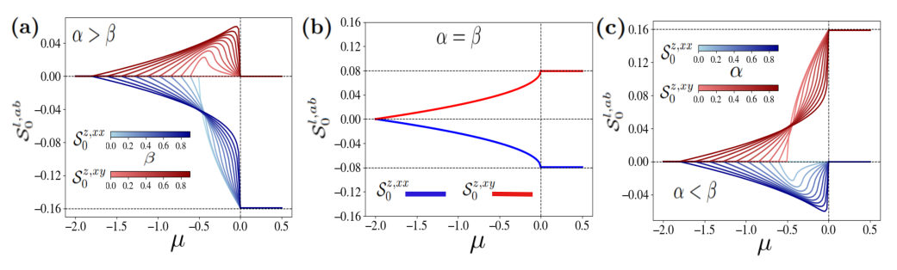
<figcaption class="paper-figure-caption"><b>Fig 3.</b> FIG. 3. The amplitude of the IGSC, Sl,ab 0 = Sl,ab(t)/ sin ωt as a function of the chemical potential for (a) α &gt; β (b) α = β (c) α &lt; β, respectively. The blue curves represent the longitudinal component while the red ones represent the transverse component of IGSC. In (a) α is fixed at 1.0 while β is varied from 0 to 0.9, resulting in a spectrum of ten curves for each component when µ &lt; 0, which collapses to a constant at µ &gt; 0. Similarly in (c) β is fixed at 1.0, while α is varied from 0 to 0.9, yielding results complementary to (a). Here α and β are in units of γ = 0.1 eV ˚A and Sl,ab 0 is plotted in units of gµBℏω/(8πγ), with µ in terms of ε0.</figcaption>
</figure>
</div>

<p><strong>Summary.</strong> This work theoretically derives an intrinsic gyrotropic spin current (IGSC) in a 2DEG system subjected to an oscillating magnetic field. By utilizing the Zeeman spin quantum geometry, the authors show that the current has both in-phase and $\pi/2$-out-of-phase components. This mechanism offers a pathway to generate pure spin currents, which is highly relevant for developing energy-efficient spintronic devices.</p>
<p><strong>Why it may be interesting.</strong> The explicit connection between geometric concepts (Berry curvature, quantum metric) and measurable transport phenomena (spin/charge currents) provides a powerful theoretical framework applicable to spintronics and topological materials.</p>
<details>
<summary>Detailed structure</summary>
<p><strong>Main problem.</strong> The paper uncovers an intrinsic gyrotropic spin current (IGSC) driven solely by an oscillating magnetic field, originating from the spin version of Zeeman quantum geometry.</p>
<p><strong>Main result.</strong> The IGSC exhibits distinct in-phase (conduction) and $\pi/2$-out-of-phase (displacement) responses, enabling pure spin current channels for energy-efficient spintronics.</p>
<p><strong>Method.</strong> The analysis uses the density matrix formalism, deriving the current using the Zeeman spin quantum metric and the Zeeman spin Berry curvature in the low-frequency clean limit.</p>
<p><strong>Model / system.</strong> The study is performed on a two-dimensional electron gas (2DEG) modeled by a Rashba-Dresselhaus Hamiltonian, incorporating Zeeman coupling from an oscillating magnetic field.</p>
<p><strong>Key observables.</strong> Intrinsic Gyrotropic Spin Current (IGSC), Zeeman Spin Quantum Metric (ZSQM), and Zeeman Spin Berry Curvature (ZSBC).</p>
<p><strong>Important parameters / regimes.</strong> Oscillating magnetic field frequency ($\omega$), Rashba ($\alpha$) and Dresselhaus ($eta$) SOC strengths, and the relative strength of $\alpha$ vs. $eta$.</p>
<p><strong>Assumptions / limitations.</strong> The calculation is performed in the low-frequency clean limit, and approximations are made regarding the expansion of the current calculation around $\eta=0$.</p>
<p><strong>Figures summary.</strong> Figure 2 shows the $k$-space distribution of IGSC components for pure Rashba, pure Dresselhaus, and mixed cases. Figure 3 plots the IGSC amplitude dependence on the chemical potential ($\mu$).</p>
<p><strong>Paper structure.</strong> The paper derives the IGSC using the density matrix formalism, analyzes the contributions from ZSQM and ZSBC, and then investigates the resulting spin and charge current components in different regimes ($\mu>0$ vs. $\mu<0$) and SOC parameter ratios ($\alpha$ vs. $eta$).</p>
</details>
<details>
<summary>Abstract</summary>
<p>We uncover an intrinsic gyrotropic spin current (IGSC) driven solely by an oscillating magnetic field, arising from the spin version of Zeeman quantum geometry. Using the density matrix formalism, we derive the IGSC in the low-frequency clean limit, in terms of the Zeeman spin quantum metric and the Zeeman spin Berry curvature. The effect is studied in a minimal Rashba-Dresselhaus model that also supports intrinsic gyrotropic charge currents from the Zeeman Berry curvature. The spin and charge currents exhibit a $π/2$ phase shift and are found to be perpendicular to each other for certain parameter ranges. This not only enables spin current detection but also opens pure spin current channels for energy-efficient spintronics. We further observe that these currents switch directions between longitudinal and transverse relative to the applied field, depending on the relative strength of Rashba and Dresselhaus interactions.</p>
</details>
<p><sub><a href="#top">↑ back to top</a></sub></p>

<p><a id="paper-2610.17749"></a></p>
<h3 id="a-full-spectrum-theory-of-moire-superlattices"><a href="http://arxiv.org/abs/2610.17749v1">A Full-Spectrum Theory of Moiré Superlattices</a></h3>
<p><strong>Authors:</strong> Tong Liu, X. R. Wang, Jiansheng Wu<br>
<strong>Type:</strong> theory · <strong>Category:</strong> strongly correlated electrons · <strong>PDF:</strong> <a href="https://arxiv.org/pdf/2610.17749v1">https://arxiv.org/pdf/2610.17749v1</a><br>
<strong>Analysis basis:</strong> full PDF text, analyzed in chunks
<strong>Topic relevance:</strong> <code>analog quantum simulation</code> <strong>2/5</strong> · <code>Keldysh / 2PI / non-Gaussian methods</code> <strong>1/5</strong></p>
<div class="figure-strip-hint">↔ Scroll figures horizontally</div>
<div class="paper-figures-scroll">
<figure class="paper-figure-card">
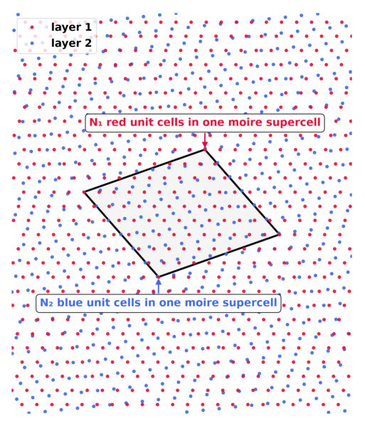
<figcaption class="paper-figure-caption"><b>Fig 1.</b> FIG. 1. Here red and blue points stand for unit cell in the two layers 1 and 2. The black box is the moir´e superlattice structure, which contains N1 unit cells from layer 1 and N2 unit cells from layer 2. This determines the size of H1 and H2, shown as Eq. (2).</figcaption>
</figure>
<figure class="paper-figure-card">
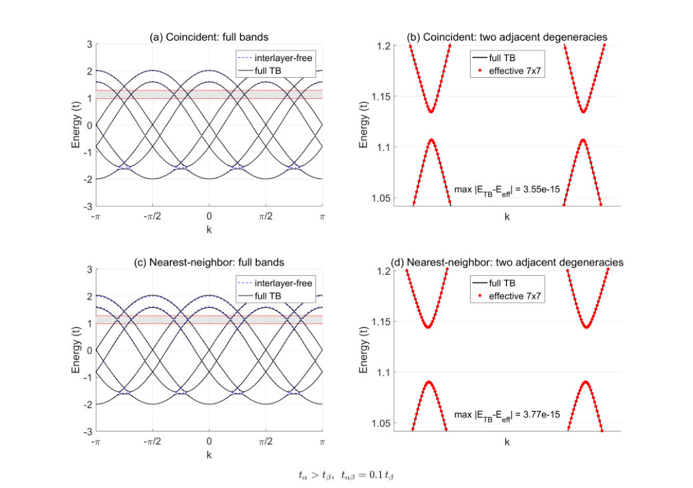
<figcaption class="paper-figure-caption"><b>Fig 2.</b> FIG. 2. Band structure of the two-chain model over the full k-range [−π, π], computed for the two interchain coupling schemes of Sec. 3. (a), (c) Coincident and nearest-neighbor coupling, respectively: the interlayer-free dispersions Γα,i, Γβ,j (blue dashed) together with the full tight-binding bands (black solid); the gray shaded band marks the energy window [0.97, 1.27] enclosing the eight degeneracies at E ≈1.12. (b), (d) Zoom around two adjacent degeneracy points inside that window: full tight-binding (black solid) versus the 7 × 7 effective model of Eq. (15) (red dashed line with dots). In both schemes the effective model reproduces the full tight-binding spectrum almost exactly. The...</figcaption>
</figure>
<figure class="paper-figure-card">

<figcaption class="paper-figure-caption"><b>Fig 3.</b> FIG. 4. Butterfly (Cantor) spectrum of the two-chain model, obtained by diagonalizing the (p + q) × (p + q) commensurate- approximant Hamiltonian as the rational ratio p/q is swept at fixed q = 150. Four badly approximable quadratic irrationals are marked with thicker colored dots— √</figcaption>
</figure>
<figure class="paper-figure-card">

<figcaption class="paper-figure-caption"><b>Fig 4.</b> FIG. 5. Box-counting dimension of the two-chain spectrum at the golden ratio φ, evaluated at the critical coupling t⊥= 2t using the Fibonacci approximant 1597/987. The shaded band marks the fractal window located automatically from the intermediate running slope; the linear fit (red) gives D ≈ 0.5.</figcaption>
</figure>
<figure class="paper-figure-card">

<figcaption class="paper-figure-caption"><b>Fig 5.</b> FIG. 7. Example of the 2D→1D mapping. Each gray point is a primitive cell; the red parallelogram is the supercell. Us- ing the periodicity of A1, A2, every cell in the supercell is identified with a distinct cell on the green line (the generator direction).</figcaption>
</figure>
</div>

<p><strong>Summary.</strong> This paper introduces a comprehensive, approximation-free theoretical formalism for analyzing moiré superlattices, overcoming the limitations of existing low-energy models. By employing a combination of advanced diagonalization and perturbation theory, the authors map out the entire electronic band structure. This work provides a universal tool for band engineering and exploring exotic correlated states in van der Waals heterostructures.</p>
<p><strong>Why it may be interesting.</strong> The development of a universal, full-spectrum theoretical tool for moiré systems provides a powerful framework for engineering correlated electronic states, which is highly relevant for understanding emergent quantum phenomena in heterostructures.</p>
<details>
<summary>Detailed structure</summary>
<p><strong>Main problem.</strong> Conventional theoretical models for moiré superlattices are limited by low-energy approximations and truncated interlayer couplings, failing to describe high-energy or strained lattice behaviors universally.</p>
<p><strong>Main result.</strong> The authors establish a unified, approximation-free analytical formalism that extends beyond low-energy Dirac points to characterize the full spectrum of moiré systems.</p>
<p><strong>Method.</strong> The approach combines a rigorous 2D-to-1D supercell mapping, exact block-circulant diagonalization of intralayer Hamiltonians, and quasi-degenerate Löwdin perturbation theory.</p>
<p><strong>Model / system.</strong> The system studied is the moiré superlattice formed by stacking van der Waals materials, modeled by a general Hamiltonian $\mathbf{H}_M$ involving intralayer and interlayer hopping terms.</p>
<p><strong>Key observables.</strong> Full energy spectrum, band crossings, flat bands, and the emergence of higher-order magic angles.</p>
<p><strong>Important parameters / regimes.</strong> The method is applicable across the entire energy spectrum, allowing systematic expansion around any band crossing, not just the Dirac point.</p>
<p><strong>Assumptions / limitations.</strong> The framework assumes the ability to perform the supercell mapping and that the Hamiltonian can be systematically decomposed into block-circulant forms.</p>
<p><strong>Figures summary.</strong> Figures illustrate the supercell structure and the mathematical formulation of the effective Hamiltonian derived from the block diagonalization process.</p>
<p><strong>Paper structure.</strong> The paper progresses from identifying the limitations of existing models to introducing the three-pillar formalism, demonstrating its application to recover known models while extending to general, high-energy, and strained regimes.</p>
</details>
<details>
<summary>Abstract</summary>
<p>Conventional theoretical descriptions of moiré superlattices, epitomized by the Bistritzer--MacDonald continuum model, are fundamentally constrained by low-energy Dirac cone approximations and first-shell interlayer coupling truncations. While successful for small-angle twisted bilayer graphene near charge neutrality, these frameworks fail to provide universal analytical solutions for strained lattices, high-energy band behaviors, or arbitrary commensurate geometries. Here, we establish a unified, approximation-free analytical formalism for generalized moiré systems based on three pillars: (i) a rigorous two-dimensional-to-one-dimensional supercell cyclic mapping, (ii) exact block-circulant diagonalization of intralayer Hamiltonians, and (iii) quasi-degenerate Löwdin perturbation theory centered on arbitrary energy degeneracy points across the full spectrum. Unlike traditional schemes anchored to the Dirac point, our approach enables systematic perturbative expansions around any band crossing, unifying the characterization of low-energy flat bands with high-energy degeneracies. We demonstrate that this framework perfectly recovers the Bistritzer--MacDonald model in the low-energy limit while extending its reach to heterostrained systems and high-energy regimes. By incorporating high-order interlayer coupling shells, we reveal an intrinsic scale self-similarity in moiré lattices and predict the emergence of higher-order magic angles and tunable flat bands driven by secondary degeneracies. This work eliminates the long-standing lack of universal analytical tools for diverse moiré platforms, providing a full-spectrum theoretical foundation for band engineering and the exploration of exotic correlated and topological states in van der Waals heterostructures.</p>
</details>
<p><sub><a href="#top">↑ back to top</a></sub></p>
<hr>
<p>
<a href="index.html">← Index</a>
 · <a href="papers_05.html">← Previous</a> · <a href="papers_07.html">Next →</a>
</p>
<hr>

</body>
</html>
